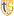
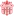
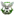
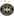
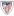
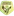
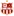
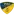
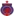
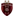

You are viewing June 14 to June 20!


🏆 EURO 2024
| Date | Fixture  Bold-faced team is selected by AIGoalie to win. Bold-faced team is selected by AIGoalie to win. |
Odds Pre-match odds of the selected team winning. Note that odds are fetched once per day at 00:00 GMT, meaning some matches may have live odds. Also odds may not be available for all leagues. |
Win How confident AIGoalie is that the selected team will win. Low confidence indicates unpredictability of the match. ▼ |
Result Whether the selected team won, drew, or lost. |
Over The minimum number of goals predicted by AIGoalie. ⚽ = over 0.5 ⚽⚽ = over 1.5 ⚽⚽⚽ = over 2.5 ... ► |
Alerts Home 🏥 = Considerable injuries 🏥🏥 = Major injuries 📉 = Dip in form Note, you may see injuries when expanding match but no alert here, meaning the model does not consider them important. |
Alerts Away 🏥 = Considerable injuries 🏥🏥 = Major injuries 📉 = Dip in form Note, you may see injuries when expanding match but no alert here, meaning the model does not consider them important. |
|
|---|---|---|---|---|---|---|---|---|
| Thu. 20 Jun. | Spain  1:0  Italy Form: WWWW Form: WLDL |
1.21 vs -0.65 | 2.26 | 72% | ✓ | ⚽ 1.39 |
📉 Away team has a dip in form recently | |
| Sun. 16 Jun. | Serbia  0:1  England Form: WLDD Form: DWWW |
-1.61 vs 1.08 | 1.49 | 71% | ✓ | ⚽ 1.15 |
📉 Home team has a dip in form recently | |
| Thu. 20 Jun. | Denmark  1:1 England Form: DDDL Form: DWWW |
-1.08 vs 0.94 | 1.75 | 67% | ⁃ | 😴 0.74 |
📉 Home team has a dip in form recently | |
| Tue. 18 Jun. | Portugal  2:1  Czech Republic Form: WLWL Form: WLDL |
0.81 vs -1.02 | 1.52 | 63% | ✓ | ⚽⚽ 2.32 |
📉 Home team has a dip in form recently | 📉 Away team has a dip in form recently |
| Fri. 14 Jun. | Germany  5:1  Scotland Form: WDWL Form: DLDL |
0.58 vs -1.41 | 1.3 | 53% | ✓ | ⚽⚽ 2.4 |
📉 Home team has a dip in form recently | 📉 Away team has a dip in form recently |
| Wed. 19 Jun. | Germany 2:0  Hungary Form: WDWL Form: WLLW |
0.47 vs -0.8 | 1.28 | 48% | ✓ | ⚽ 1.58 |
📉 Home team has a dip in form recently | 📉 Away team has a dip in form recently |
| Sun. 16 Jun. | Poland  1:2  Netherlands Form: WLLD Form: LWWL |
-0.75 vs 0.29 | 1.58 | 33% | ✓ | ⚽ 1.83 |
📉 Home team has a dip in form recently | 📉 Away team has a dip in form recently |
| Mon. 17 Jun. | Belgium  0:1  Slovakia Form: LWDL Form: WLDL |
0.1 vs -0.64 | 1.52 | 18% | ❌ | 😴 0.76 |
📉 Home team has a dip in form recently | 📉 Away team has a dip in form recently |
| Sat. 15 Jun. | Italy 2:1  Albania Form: WLDL Form: WLDL |
0.1 vs -0.82 | 1.4 | 18% | ✓ | 😴 0.67 |
📉 Home team has a dip in form recently | 📉 Away team has a dip in form recently |
| Mon. 17 Jun. | Romania  3:0  Ukraine Form: WLDL Form: WLWD |
-0.83 vs -0.15 | 1.93 | 17% | ❌ | 😴 0.5 |
📉 Home team has a dip in form recently | 📉 Away team has a dip in form recently |
| Sun. 16 Jun. | Slovenia  1:1 Denmark Form: DDDL Form: DDDL |
-0.74 vs -0.16 | 1.75 | 17% | ⁃ | 😴 0.7 |
📉 Home team has a dip in form recently | 📉 Away team has a dip in form recently |
| Wed. 19 Jun. | Scotland 1:1  Switzerland Form: DLDL Form: DDWL |
-1.06 vs -0.26 | 1.89 | 15% | ⁃ | ⚽⚽ 2.35 |
📉 Home team has a dip in form recently | 📉 Away team has a dip in form recently |
| Sat. 15 Jun. | Hungary 1:3 Switzerland Form: WLLW Form: DDWL |
-0.45 vs -0.37 | 2.26 | 13% | ✓ | ⚽ 1.51 |
📉 Home team has a dip in form recently | 📉 Away team has a dip in form recently |
| Thu. 20 Jun. | Slovenia 1:1 Serbia Form: DDDL Form: WLDD |
-0.6 vs -0.71 | 8% | ⁃ | ⚽ 1.08 |
📉 Home team has a dip in form recently | 📉 Away team has a dip in form recently |
🏆 Copa América 2024
| Date | Fixture Bold-faced team is selected by AIGoalie to win. |
Odds Pre-match odds of the selected team winning. Note that odds are fetched once per day at 00:00 GMT, meaning some matches may have live odds. Also odds may not be available for all leagues. |
Win How confident AIGoalie is that the selected team will win. Low confidence indicates unpredictability of the match. ▼ |
Result Whether the selected team won, drew, or lost. |
Over The minimum number of goals predicted by AIGoalie. ⚽ = over 0.5 ⚽⚽ = over 1.5 ⚽⚽⚽ = over 2.5 ... ► |
Alerts Home 🏥 = Considerable injuries 🏥🏥 = Major injuries 📉 = Dip in form Note, you may see injuries when expanding match but no alert here, meaning the model does not consider them important. |
Alerts Away 🏥 = Considerable injuries 🏥🏥 = Major injuries 📉 = Dip in form Note, you may see injuries when expanding match but no alert here, meaning the model does not consider them important. |
|---|
🌍 Global
| Date | Fixture Bold-faced team is selected by AIGoalie to win. |
Odds Pre-match odds of the selected team winning. Note that odds are fetched once per day at 00:00 GMT, meaning some matches may have live odds. |
Win How confident AIGoalie is that the selected team will win. Low confidence indicates unpredictability of the match. ▼ |
Result Whether the selected team won, drew, or lost. |
Over The minimum number of goals predicted by AIGoalie. ⚽ = over 0.5 ⚽⚽ = over 1.5 ⚽⚽⚽ = over 2.5 ... ► |
Alerts Home 🏥 = Considerable injuries 🏥🏥 = Major injuries 📉 = Dip in form Note, you may see injuries when expanding match but no alert here, meaning the model does not consider them important. |
Alerts Away 🏥 = Considerable injuries 🏥🏥 = Major injuries 📉 = Dip in form Note, you may see injuries when expanding match but no alert here, meaning the model does not consider them important. |
|
|---|---|---|---|---|---|---|---|---|
| Sat. 15 Jun. | Argentina  4:1  Guatemala Form: WWWW Form: DWWL |
1.61 vs -1.95 | 1.05 | 76% | ✓ | 😴 0.85 |
📉 Away team has a dip in form recently | |
| Tue. 18 Jun. | Meizhou Hakka  1:2  Shanghai Port Form: LLLL Form: WWWW |
-2.3 vs 1.6 | 1.18 | 76% | ✓ | ⚽⚽ 2.94 |
📉 Home team has a dip in form recently | |
| Sat. 15 Jun. | Guatemala 01:00 Argentina Form: DWWL Form: WWWW |
-1.15 vs 1.58 | 1.08 | 76% | 😴 0.85 |
📉 Home team has a dip in form recently | ||
| Sun. 16 Jun. | FCI Levadia  2:1  Jalgpallikool Tammeka Form: WWWW Form: LLDW |
1.57 vs -2.21 | 76% | ✓ | ⚽⚽ 2.35 |
📉 Away team has a dip in form recently | ||
| Sun. 16 Jun. | Auckland City FC  2:1  Hamilton Wanderers Form: WDWW Form: LLWD |
1.46 vs -2.89 | 75% | ✓ | ⚽⚽ 2.41 |
📉 Away team has a dip in form recently | ||
| Fri. 14 Jun. | Tianjin Jinmen Tiger  0:3 Shanghai Port Form: WDWD Form: WWWW |
-0.98 vs 1.29 | 1.08 | 73% | ✓ | ⚽⚽ 2.79 |
📉 Home team has a dip in form recently | |
| Thu. 20 Jun. | Sepahan FC  2:0  Mes Rafsanjan Form: WWWW Form: LLWL |
1.23 vs -1.73 | 72% | ✓ | ⚽⚽ 2.49 |
📉 Away team has a dip in form recently | ||
| Thu. 20 Jun. | Spain 1:0 Italy Form: WWWW Form: WLDL |
1.21 vs -0.65 | 2.26 | 72% | ✓ | ⚽ 1.39 |
📉 Away team has a dip in form recently | |
| Sat. 15 Jun. | FK Slutsk  0:5  Dinamo Minsk Form: LLWW Form: WWWD |
-1.5 vs 1.15 | 71% | ✓ | ⚽⚽⚽ 3.32 |
📉 Home team has a dip in form recently | ||
| Wed. 19 Jun. | FC Nomme United  0:6 FCI Levadia Form: DLDL Form: WWWW |
-1.67 vs 1.11 | 71% | ✓ | ⚽⚽ 2.4 |
📉 Home team has a dip in form recently | ||
| Fri. 14 Jun. | FAR Rabat 2:0 FUS Rabat Form: WDWW Form: LWDL |
1.1 vs -1.75 | 1.52 | 71% | ✓ | ⚽ 1.8 |
📉 Away team has a dip in form recently | |
| Sun. 16 Jun. | Serbia 0:1 England Form: WLDD Form: DWWW |
-1.61 vs 1.08 | 1.49 | 71% | ✓ | ⚽ 1.15 |
📉 Home team has a dip in form recently | |
| Sun. 16 Jun. | Istiqlol Dushanbe  2:0  ZSKA Dushanbe Form: WWWW Form: DDWL |
1.07 vs -0.97 | 71% | ✓ | 😴 0.87 |
📉 Away team has a dip in form recently | ||
| Sun. 16 Jun. | Ming Chuan University  0:1  Tainan City Taiwan Steel Form: WLDL Form: WWWD |
-2.05 vs 1.05 | 70% | ✓ | ⚽⚽⚽ 3.33 |
📉 Home team has a dip in form recently | ||
| Sat. 15 Jun. | Colombia  3:0  Bolivia Form: WDWW Form: LLLL |
0.98 vs -2.95 | 1.17 | 69% | ✓ | ⚽⚽ 2.25 |
📉 Away team has a dip in form recently | |
| Sun. 16 Jun. | Lautoka FC  4:0  Nasinu FC Form: LWWW Form: LWWL |
0.97 vs -1.93 | 69% | ✓ | ⚽⚽⚽ 3.8 |
📉 Away team has a dip in form recently | ||
| Thu. 20 Jun. | Denmark 1:1 England Form: DDDL Form: DWWW |
-1.08 vs 0.94 | 1.75 | 67% | ⁃ | 😴 0.74 |
📉 Home team has a dip in form recently | |
| Sat. 15 Jun. | Sepahan FC 2:1  Gol Gohar Sirjan FC Form: WWWW Form: LLLL |
0.91 vs -2.37 | 66% | ✓ | ⚽ 1.6 |
🏥 📉 Away team has considerable injuries and a dip in form recently | ||
| Thu. 20 Jun. | CA Boca Juniors  2:1  Club Almirante Brown Form: WLWW Form: LLDD |
0.91 vs -2.49 | 1.1 | 66% | ✓ | ⚽ 1.41 |
📉 Home team has a dip in form recently | 📉 Away team has a dip in form recently |
| Sat. 15 Jun. | True Bangkok United  5:2 after pens  Dragon Pathumwan Kanchanaburi FC Form: WLWW Form: WLWL |
0.83 vs -1.57 | 63% | ✓ | ⚽⚽ 2.22 |
📉 Home team has a dip in form recently | 📉 Away team has a dip in form recently | |
| Sun. 16 Jun. | BG Pathum United  1:0  Muangthong United Form: WWWW Form: WWWL |
0.82 vs -0.22 | 1.29 | 63% | ✓ | ⚽⚽⚽ 3.84 |
📉 Away team has a dip in form recently | |
| Tue. 18 Jun. | Portugal 2:1 Czech Republic Form: WLWL Form: WLDL |
0.81 vs -1.02 | 1.52 | 63% | ✓ | ⚽⚽ 2.32 |
📉 Home team has a dip in form recently | 📉 Away team has a dip in form recently |
| Sun. 16 Jun. | Futuro  1:0  New Taipei City Hang Yuan FC Form: WWWW Form: LLDD |
0.76 vs -2.03 | 60% | ✓ | ⚽ 1.42 |
📉 Away team has a dip in form recently | ||
| Sat. 15 Jun. | Neman Grodno  1:0  BATE Borisov Form: WLWW Form: LWLD |
0.7 vs -1.48 | 58% | ✓ | ⚽⚽ 2.37 |
📉 Home team has a dip in form recently | 📉 Away team has a dip in form recently | |
| Fri. 14 Jun. | Sociedade Esportiva Palmeiras  2:0  Clube de Regatas Vasco da Gama Form: LWDW Form: DWWW |
0.66 vs -1.74 | 2.62 | 56% | ✓ | ⚽⚽ 2.24 |
🏥 Home team has considerable injuries | |
| Sun. 16 Jun. | CA Peñarol  1:1  Racing Club de Montevideo Form: LDWD Form: WDLL |
0.6 vs -1.99 | 54% | ⁃ | ⚽ 1.41 |
📉 Home team has a dip in form recently | 📉 Away team has a dip in form recently | |
| Sun. 16 Jun. | Shanghai Shenhua  1:1  Chengdu Rongcheng Form: WWWW Form: WWWW |
0.6 vs -0.13 | 1.91 | 54% | ⁃ | ⚽ 1.45 |
||
| Thu. 20 Jun. | Mes Rafsanjan 15:15 Sepahan FC Form: LLWL Form: WWWW |
-1.17 vs 0.6 | 54% | ⚽⚽ 2.49 |
📉 Home team has a dip in form recently | |||
| Fri. 14 Jun. | Germany 5:1 Scotland Form: WDWL Form: DLDL |
0.58 vs -1.41 | 1.3 | 53% | ✓ | ⚽⚽ 2.4 |
📉 Home team has a dip in form recently | 📉 Away team has a dip in form recently |
| Sat. 15 Jun. | CA Boca Juniors 1:0  CA Vélez Sarsfield Form: WLWW Form: DDWL |
0.57 vs -1.54 | 53% | ✓ | ⚽⚽ 2.27 |
📉 Home team has a dip in form recently | 📉 Away team has a dip in form recently | |
| Sun. 16 Jun. | Los Angeles Galaxy  4:2  Sporting Kansas City Form: WWLW Form: WLWW |
0.54 vs -1.33 | 51% | ✓ | ⚽⚽⚽ 3.08 |
📉 Home team has a dip in form recently | 📉 Away team has a dip in form recently | |
| Thu. 20 Jun. | Thep Xanh Nam Dinh FC  1:0  Hong Linh Ha Tinh FC Form: WWWL Form: DLDD |
0.53 vs -2.16 | 51% | ✓ | ⚽⚽ 2.33 |
📉 Home team has a dip in form recently | 🏥 📉 Away team has considerable injuries and a dip in form recently | |
| Sun. 16 Jun. | Egersunds IK  1:1  Vålerenga Fotball Elite Form: WDDW Form: WWDW |
-0.82 vs 0.52 | 51% | ⁃ | ⚽⚽⚽ 3.7 |
📉 Home team has a dip in form recently | ||
| Sat. 15 Jun. | CA Huracán  1:0'  CS Independiente Rivadavia Form: WWWW Form: WLLL |
0.49 vs -1.76 | 49% | ⚽ 1.19 |
📉 Away team has a dip in form recently | |||
| Fri. 14 Jun. | Víkingur Göta II  19:00  FC Hoyvík Form: WWWW Form: LLWD |
0.48 vs -1.84 | 1.17 | 49% | ⚽⚽ 2.84 |
📉 Away team has a dip in form recently | ||
| Sun. 16 Jun. | Defensor Sporting Club  1:1  CA Progreso Form: WDWD Form: WDLW |
0.47 vs -1.57 | 48% | ⁃ | ⚽⚽ 2.37 |
📉 Home team has a dip in form recently | 🏥 📉 Away team has considerable injuries and a dip in form recently | |
| Wed. 19 Jun. | Germany 2:0 Hungary Form: WDWL Form: WLLW |
0.47 vs -0.8 | 1.28 | 48% | ✓ | ⚽ 1.58 |
📉 Home team has a dip in form recently | 📉 Away team has a dip in form recently |
| Sat. 15 Jun. | Belshina Bobruisk  1:1  FK Ostrovets Form: DWWW Form: DWLD |
0.47 vs -1.59 | 47% | ⁃ | ⚽⚽ 2.44 |
📉 Away team has a dip in form recently | ||
| Wed. 19 Jun. | Santos FC  2:0  Goiás EC Form: WDWW Form: LLWL |
0.46 vs -1.87 | 1.01 | 47% | ✓ | ⚽ 1.56 |
🏥 Home team has considerable injuries | 📉 Away team has a dip in form recently |
| Sat. 15 Jun. | Turun Palloseura  1:0  Mikkelin Palloilijat Form: WWLD Form: LDLW |
0.45 vs -2.12 | 46% | ✓ | ⚽ 1.91 |
📉 Home team has a dip in form recently | 📉 Away team has a dip in form recently | |
| Sun. 16 Jun. | Seattle Sounders FC  2:0  Minnesota United FC Form: WWWW Form: LLLL |
0.45 vs -1.96 | 1.58 | 46% | ✓ | ⚽⚽ 2.03 |
🏥 Home team has considerable injuries | 📉 Away team has a dip in form recently |
| Sat. 15 Jun. | Chongqing Tonglianglong  3:1  Wuxi Wugo Form: WWLD Form: LWDW |
0.45 vs -1.67 | 1.05 | 46% | ✓ | ⚽⚽ 2.15 |
📉 Home team has a dip in form recently | |
| Thu. 20 Jun. | Inter Miami CF  2:1  Columbus Crew Form: WWWL Form: WWWW |
0.42 vs -0.6 | 44% | ✓ | ⚽⚽⚽ 3.37 |
🏥🏥 📉 Home team has MAJOR injuries and a dip in form recently | ||
| Tue. 18 Jun. | Paide Linnameeskond  0:1  Pärnu JK Vaprus Form: LWDW Form: LWLL |
0.41 vs -2.29 | 1.32 | 43% | ❌ | ⚽ 1.76 |
📉 Away team has a dip in form recently | |
| Sat. 15 Jun. | Independiente Santa Fe  18:30  Atlético Bucaramanga Form: WWLW Form: LWWL |
0.41 vs -1.06 | 43% | ⚽ 1.15 |
📉 Home team has a dip in form recently | 📉 Away team has a dip in form recently | ||
| Sun. 16 Jun. | Gimpo FC  1:0  Ansan Greeners Form: WDDD Form: LWDL |
0.41 vs -2.12 | 42% | ✓ | ⚽ 1.17 |
📉 Home team has a dip in form recently | 📉 Away team has a dip in form recently | |
| Sat. 15 Jun. | Esperance Tunis  2:0  US Monastir Form: LWWD Form: WLDL |
0.39 vs -1.7 | 42% | ✓ | 😴 0.54 |
📉 Away team has a dip in form recently | ||
| Sat. 15 Jun. | Dalian Yingbo  0:3  Yunnan Yukun Form: LWLD Form: WWLW |
-0.96 vs 0.39 | 1.86 | 41% | ✓ | ⚽ 1.25 |
📉 Home team has a dip in form recently | 📉 Away team has a dip in form recently |
| Thu. 20 Jun. | FC Cincinnati  4:3  Philadelphia Union Form: LWWW Form: LLLD |
0.38 vs -2.19 | 1.56 | 40% | ✓ | ⚽⚽⚽ 3.06 |
🏥 Home team has considerable injuries | 🏥 📉 Away team has considerable injuries and a dip in form recently |
| Sat. 15 Jun. | Club Nacional  21:30  Liverpool FC Montevideo Form: LWWD Form: LLWL |
0.36 vs -1.74 | 39% | ⚽⚽ 2.01 |
📉 Away team has a dip in form recently | |||
| Sun. 16 Jun. | San Jose Earthquakes  2:4 FC Cincinnati Form: LLLW Form: LWWW |
-1.26 vs 0.35 | 1.64 | 38% | ✓ | ⚽⚽⚽ 3.0 |
📉 Home team has a dip in form recently | 🏥 Away team has considerable injuries |
| Fri. 14 Jun. | CR Flamengo  2:1  Grêmio Foot-Ball Porto Alegrense Form: LWWD Form: WDWL |
0.33 vs -1.76 | 1.04 | 37% | ✓ | ⚽ 1.71 |
🏥 Home team has considerable injuries | 🏥 📉 Away team has considerable injuries and a dip in form recently |
| Thu. 20 Jun. | UMF Afturelding  0:3  ÍBV Vestmannaeyjar Form: DWWD Form: WWDD |
0.33 vs -1.26 | 2.68 | 37% | ❌ | ⚽⚽⚽ 3.14 |
📉 Away team has a dip in form recently | |
| Sun. 16 Jun. | Sport Club do Recife  22:30  Mirassol Futebol Clube (SP) Form: DWDW Form: LDDW |
0.33 vs -1.53 | 36% | ⚽ 1.59 |
📉 Away team has a dip in form recently | |||
| Thu. 20 Jun. | São Paulo Futebol Clube  0:1  Cuiabá Esporte Clube (MT) Form: WWWW Form: DDLD |
0.33 vs -1.67 | 36% | ❌ | ⚽⚽ 2.15 |
🏥 Home team has considerable injuries | 📉 Away team has a dip in form recently | |
| Thu. 20 Jun. | Valmiera FC  3:0  FK Metta Form: WLDW Form: LWLW |
0.32 vs -1.52 | 1.2 | 35% | ✓ | ⚽⚽ 2.28 |
📉 Home team has a dip in form recently | 📉 Away team has a dip in form recently |
| Sun. 16 Jun. | Sandvikens IF  2:0  IK Oddevold Form: WWWL Form: LDLL |
0.29 vs -1.59 | 2.16 | 34% | ✓ | ⚽ 1.95 |
📉 Home team has a dip in form recently | 📉 Away team has a dip in form recently |
| Sun. 16 Jun. | Poland 1:2 Netherlands Form: WLLD Form: LWWL |
-0.75 vs 0.29 | 1.58 | 33% | ✓ | ⚽ 1.83 |
📉 Home team has a dip in form recently | 📉 Away team has a dip in form recently |
| Thu. 20 Jun. | Los Angeles Galaxy 2:0  New York City FC Form: WWLW Form: LWWL |
0.27 vs -1.07 | 32% | ✓ | ⚽ 1.65 |
📉 Home team has a dip in form recently | 📉 Away team has a dip in form recently | |
| Wed. 19 Jun. | Turun Palloseura 2:2  Pallokerho-35 Form: WWLD Form: DLLL |
0.26 vs -1.66 | 31% | ⁃ | ⚽⚽ 2.22 |
📉 Home team has a dip in form recently | 📉 Away team has a dip in form recently | |
| Fri. 14 Jun. | Club Athlétique Bizertin  16:30 US Tataouine Form: WWWL Form: WLLL |
0.26 vs -1.98 | 3.1 | 31% | 😴 0.57 |
📉 Home team has a dip in form recently | 📉 Away team has a dip in form recently | |
| Sat. 15 Jun. | Zhejiang FC  3:1  Changchun Yatai Form: WLLW Form: WDWD |
0.25 vs -1.52 | 30% | ✓ | ⚽⚽ 2.5 |
📉 Home team has a dip in form recently | 📉 Away team has a dip in form recently | |
| Sun. 16 Jun. | Moss FK  1:0  Bryne FK Form: WLWW Form: WLWL |
0.24 vs -0.92 | 29% | ✓ | ⚽ 1.68 |
📉 Home team has a dip in form recently | 📉 Away team has a dip in form recently | |
| Thu. 20 Jun. | Nasaf Qarshi  1:0  Neftchi Fergana Form: LWDW Form: LDLL |
0.23 vs -1.83 | 29% | ✓ | 😴 0.66 |
📉 Away team has a dip in form recently | ||
| Sun. 16 Jun. | JEF United Chiba  1:0  Tokushima Vortis Form: LWLW Form: WDWL |
0.23 vs -1.21 | 1.79 | 28% | ✓ | ⚽ 1.87 |
📉 Home team has a dip in form recently | 📉 Away team has a dip in form recently |
| Wed. 19 Jun. | Surkhon Termiz  2:1  Metallurg Bekabad Form: DWLW Form: LDLL |
0.22 vs -2.24 | 27% | ✓ | ⚽⚽ 2.16 |
📉 Home team has a dip in form recently | 📉 Away team has a dip in form recently | |
| Sat. 15 Jun. | Gefle IF  1:2  Landskrona BoIS Form: LLLD Form: WWWW |
-0.96 vs 0.2 | 26% | ✓ | ⚽⚽ 2.36 |
📉 Home team has a dip in form recently | ||
| Sat. 15 Jun. | Deportivo Llacuabamba  21:30  Alianza Universidad Form: WDWL Form: DWWW |
-0.38 vs 0.2 | 1.9 | 26% | ⚽⚽ 2.56 |
📉 Home team has a dip in form recently | ||
| Sat. 15 Jun. | Ho Chi Minh City FC  1:1 Thep Xanh Nam Dinh FC Form: DDWW Form: WWWL |
-0.53 vs 0.2 | 26% | ⁃ | ⚽ 1.73 |
📉 Away team has a dip in form recently | ||
| Thu. 20 Jun. | SJK Seinäjoki II  0:3  FC KTP Form: LLLL Form: LWWD |
-1.52 vs 0.2 | 26% | ✓ | ⚽⚽⚽ 3.18 |
📉 Home team has a dip in form recently | ||
| Wed. 19 Jun. | Manta FC  2:1  Cuniburo FC Form: WWLW Form: WWWW |
0.19 vs -0.69 | 25% | ✓ | ⚽ 1.64 |
📉 Home team has a dip in form recently | ||
| Sat. 15 Jun. | Jeonnam Dragons  1:1  Bucheon FC 1995 Form: DDWW Form: LWLD |
0.17 vs -1.63 | 2.28 | 23% | ⁃ | ⚽ 1.45 |
📉 Away team has a dip in form recently | |
| Sat. 15 Jun. | Fujieda MYFC  1:3  Yokohama FC Form: LWWL Form: WWWL |
-0.77 vs 0.16 | 1.74 | 23% | ✓ | ⚽ 1.71 |
📉 Home team has a dip in form recently | 📉 Away team has a dip in form recently |
| Sun. 16 Jun. | Colorado Rapids  2:0  Austin FC Form: WLWW Form: DWLW |
0.16 vs -1.34 | 23% | ✓ | ⚽ 1.85 |
📉 Home team has a dip in form recently | 📉 Away team has a dip in form recently | |
| Sun. 16 Jun. | Gamba Osaka  2:1  Kashiwa Reysol Form: DLWW Form: DWWW |
0.16 vs -0.82 | 22% | ✓ | ⚽ 1.41 |
📉 Home team has a dip in form recently | ||
| Sun. 16 Jun. | Volna Pinsk  2:0  FK Baranovichi Form: WLWW Form: LLWD |
0.15 vs -1.47 | 22% | ✓ | ⚽ 1.57 |
📉 Home team has a dip in form recently | 📉 Away team has a dip in form recently | |
| Sat. 15 Jun. | FC Hegelmann  3:2  FK Suduva Marijampole Form: LDWW Form: LLLD |
0.15 vs -1.86 | 22% | ✓ | ⚽⚽ 2.18 |
📉 Away team has a dip in form recently | ||
| Sun. 16 Jun. | FK Zalgiris Vilnius  2:1  FK Panevezys Form: WWLL Form: LWLW |
0.15 vs -1.46 | 22% | ✓ | ⚽ 1.53 |
📉 Home team has a dip in form recently | 🏥 📉 Away team has considerable injuries and a dip in form recently | |
| Fri. 14 Jun. | AS Soliman 16:30 Etoile Sportive Metlaoui Form: WWDW Form: WLDD |
0.15 vs -1.68 | 1.93 | 22% | 😴 0.93 |
📉 Away team has a dip in form recently | ||
| Sun. 16 Jun. | Kashima Antlers  1:1  Albirex Niigata Form: DLWW Form: DWLL |
0.14 vs -1.48 | 21% | ⁃ | ⚽⚽ 2.45 |
📉 Home team has a dip in form recently | 📉 Away team has a dip in form recently | |
| Sat. 15 Jun. | Heilongjiang Ice City  1:2  Guangxi Pingguo Haliao Form: LLWL Form: DWWD |
-1.36 vs 0.14 | 21% | ✓ | ⚽ 1.72 |
📉 Home team has a dip in form recently | ||
| Sat. 15 Jun. | Kyoto Sanga  2:0  Hokkaido Consadole Sapporo Form: DWWW Form: LLLW |
0.14 vs -2.12 | 21% | ✓ | ⚽ 1.93 |
🏥 📉 Away team has considerable injuries and a dip in form recently | ||
| Wed. 19 Jun. | Pohang Steelers  6:5 after pens  Suwon Samsung Bluewings Form: DWDW Form: LWDD |
0.13 vs -1.58 | 1.65 | 20% | ✓ | ⚽ 1.7 |
🏥 📉 Away team has considerable injuries and a dip in form recently | |
| Wed. 19 Jun. | FC Haka  0:0  FC Inter Turku Form: WLWW Form: WWWW |
0.13 vs -0.18 | 20% | ⁃ | ⚽⚽ 2.36 |
📉 Home team has a dip in form recently | ||
| Mon. 17 Jun. | Belgium 0:1 Slovakia Form: LWDL Form: WLDL |
0.1 vs -0.64 | 1.52 | 18% | ❌ | 😴 0.76 |
📉 Home team has a dip in form recently | 📉 Away team has a dip in form recently |
| Sun. 16 Jun. | Indy Eleven  1:0  San Antonio FC Form: WLDW Form: LLLW |
0.1 vs -1.58 | 18% | ✓ | ⚽ 1.68 |
📉 Home team has a dip in form recently | 📉 Away team has a dip in form recently | |
| Sat. 15 Jun. | Italy 2:1 Albania Form: WLDL Form: WLDL |
0.1 vs -0.82 | 1.4 | 18% | ✓ | 😴 0.67 |
📉 Home team has a dip in form recently | 📉 Away team has a dip in form recently |
| Sun. 16 Jun. | Vissel Kobe  1:0  Kawasaki Frontale Form: DWWW Form: DDDL |
0.1 vs -1.76 | 18% | ✓ | ⚽⚽ 2.65 |
🏥 📉 Away team has considerable injuries and a dip in form recently | ||
| Sat. 15 Jun. | Sanfrecce Hiroshima  4:1  Tokyo Verdy Form: DDLW Form: LWDL |
0.1 vs -1.14 | 18% | ✓ | ⚽⚽ 2.15 |
📉 Home team has a dip in form recently | 📉 Away team has a dip in form recently | |
| Wed. 19 Jun. | Club Leones del Norte  21:00  Chacaritas FC Form: LWWW Form: LLWL |
0.09 vs -1.38 | 2.16 | 17% | ⚽ 1.25 |
📉 Away team has a dip in form recently | ||
| Sun. 16 Jun. | Pakhtakor Tashkent  0:0  Navbahor Namangan Form: LWWW Form: DLLW |
0.09 vs -1.31 | 17% | ⁃ | ⚽⚽ 2.09 |
📉 Away team has a dip in form recently | ||
| Fri. 14 Jun. | CA Talleres  2:1  Club Atlético Platense Form: LWWW Form: DWLL |
0.09 vs -1.91 | 17% | ✓ | ⚽⚽ 2.08 |
🏥🏥 Home team has MAJOR injuries | 📉 Away team has a dip in form recently | |
| Tue. 18 Jun. | New Zealand  3:0  Solomon Islands Form: WWWW Form: WLLL |
0.08 vs -0.94 | 16% | ✓ | ⚽⚽ 2.65 |
📉 Away team has a dip in form recently | ||
| Sat. 15 Jun. | Henan FC  2:1  Beijing Guoan Form: WWWL Form: LWWW |
-0.18 vs 0.06 | 2.44 | 15% | ❌ | ⚽⚽ 2.65 |
📉 Home team has a dip in form recently | |
| Wed. 19 Jun. | Botafogo de Futebol e Regatas  1:1  Club Athletico Paranaense Form: WDWW Form: WLWL |
0.06 vs -1.52 | 15% | ⁃ | ⚽ 1.9 |
🏥 Home team has considerable injuries | 🏥 📉 Away team has considerable injuries and a dip in form recently | |
| Thu. 20 Jun. | Oakland Roots SC  2:1  El Paso Locomotive FC Form: WLWW Form: WDLL |
0.06 vs -1.42 | 1.04 | 14% | ✓ | ⚽ 1.58 |
📉 Home team has a dip in form recently | 📉 Away team has a dip in form recently |
| Sun. 16 Jun. | FK Eskhata  7:0  FK Kuktosh Form: LWWW Form: LLLL |
0.04 vs -2.4 | 14% | ✓ | ⚽⚽⚽ 3.33 |
📉 Away team has a dip in form recently | ||
| Fri. 14 Jun. | MC Algiers 3:2 MC Oran Form: DLWL Form: WDWL |
0.04 vs -1.33 | 1.92 | 14% | ✓ | ⚽ 1.01 |
📉 Home team has a dip in form recently | 📉 Away team has a dip in form recently |
| Fri. 14 Jun. | Esporte Clube Bahia  1:0  Fortaleza Esporte Clube Form: LWLW Form: WWLW |
0.04 vs -0.91 | 1.01 | 13% | ✓ | ⚽⚽⚽ 3.53 |
📉 Home team has a dip in form recently | 📉 Away team has a dip in form recently |
| Fri. 14 Jun. | Isloch Minsk Region  1:0  FK Gomel Form: LDWW Form: LLDW |
0.04 vs -1.33 | 4.2 | 13% | ✓ | ⚽ 1.37 |
📉 Away team has a dip in form recently | |
| Tue. 18 Jun. | FK Molodechno  0:2  Torpedo-BelAZ Zhodino Form: LWDW Form: WLWL |
-0.36 vs 0.04 | 13% | ✓ | 😴 0.93 |
📉 Away team has a dip in form recently | ||
| Fri. 14 Jun. | ASO Chlef 2:1 US Biskra Form: LDWW Form: LLWL |
0.04 vs -1.85 | 1.06 | 13% | ✓ | ⚽ 1.74 |
📉 Away team has a dip in form recently | |
| Sun. 16 Jun. | Östers IF  1:1  Östersunds FK Form: LDWW Form: LDWL |
0.04 vs -1.26 | 13% | ⁃ | ⚽ 1.67 |
📉 Away team has a dip in form recently | ||
| Fri. 14 Jun. | Operário Ferroviário Esporte Clube (PR)  1:0 Santos FC Form: WLDL Form: WDWW |
-1.22 vs 0.03 | 12% | ❌ | 😴 0.87 |
📉 Home team has a dip in form recently | 🏥 Away team has considerable injuries | |
| Sun. 16 Jun. | Vegalta Sendai  2:2  V-Varen Nagasaki Form: DDWL Form: WDWW |
-0.8 vs 0.03 | 12% | ⁃ | ⚽⚽ 2.37 |
📉 Home team has a dip in form recently | ||
| Wed. 19 Jun. | HJK Helsinki  3:1  Kuopion Palloseura Form: LWLL Form: WLWW |
0.03 vs -0.91 | 2.4 | 12% | ✓ | ⚽⚽ 2.48 |
📉 Home team has a dip in form recently | 📉 Away team has a dip in form recently |
| Sun. 16 Jun. | Colorado Springs Switchbacks FC  4:2  Orange County SC Form: WDWW Form: WLLW |
0.02 vs -0.95 | 12% | ✓ | ⚽ 1.33 |
📉 Away team has a dip in form recently | ||
| Sat. 15 Jun. | CA Unión (Santa Fe)  2:1  CA San Lorenzo de Almagro Form: DWWW Form: DLWL |
0.02 vs -1.63 | 12% | ✓ | 😴 0.38 |
🏥 📉 Away team has considerable injuries and a dip in form recently | ||
| Wed. 19 Jun. | Ulsan HD FC  7:4 after pens  Gyeongnam FC Form: WLDL Form: LDLW |
0.02 vs -1.95 | 12% | ✓ | ⚽⚽ 2.01 |
📉 Home team has a dip in form recently | 📉 Away team has a dip in form recently | |
| Sun. 16 Jun. | FC KTP 1:5 FC Inter Turku Form: LWWD Form: WWWW |
0.02 vs 0.0 | 11% | ❌ | ⚽⚽⚽ 3.31 |
|||
| Sun. 16 Jun. | Berekum Chelsea FC  2:2  Heart of Lions FC Form: LWWD Form: WWWD |
0.01 vs -0.66 | 11% | ⁃ | ⚽ 1.14 |
|||
| Sat. 15 Jun. | Labasa FC  02:30  Rewa FA Form: WDWW Form: WWLL |
0.01 vs -0.33 | 11% | ⚽ 1.48 |
📉 Away team has a dip in form recently | |||
| Sat. 15 Jun. | FA Siauliai  3:3  FC Dziugas Telsiai Form: DWWL Form: WLLD |
0.01 vs -1.5 | 1.38 | 11% | ⁃ | ⚽ 1.41 |
📉 Home team has a dip in form recently | 📉 Away team has a dip in form recently |
| Tue. 18 Jun. | Kalju FC  2:0  Kalev Tallinn Form: DWDW Form: LWDL |
0.01 vs -1.83 | 10% | ✓ | ⚽⚽ 2.39 |
📉 Away team has a dip in form recently | ||
| Thu. 20 Jun. | Inter de Barinas  23:00  Estudiantes de Mérida Form: WDWL Form: LWLW |
-0.01 vs -1.64 | 20% | ⚽ 1.15 |
📉 Home team has a dip in form recently | 📉 Away team has a dip in form recently | ||
| Wed. 19 Jun. | FC Dziugas Telsiai 0:4 FK Zalgiris Vilnius Form: WLLD Form: WWLL |
-0.86 vs -0.01 | 20% | ✓ | ⚽ 1.82 |
📉 Home team has a dip in form recently | 📉 Away team has a dip in form recently | |
| Fri. 14 Jun. | Union Touarga Sportif  3:3  Hassania d'Agadir Form: WWWD Form: LDWD |
-0.02 vs -1.2 | 1.91 | 20% | ⁃ | ⚽⚽ 2.02 |
📉 Away team has a dip in form recently | |
| Thu. 20 Jun. | Austin FC 1:1  Los Angeles FC Form: DWLW Form: WWWL |
-0.79 vs -0.02 | 4.8 | 20% | ⁃ | ⚽⚽ 2.02 |
📉 Home team has a dip in form recently | 📉 Away team has a dip in form recently |
| Thu. 20 Jun. | CS Sfaxien  0:0 Esperance Tunis Form: DLWD Form: LWWD |
-1.12 vs -0.02 | 20% | ⁃ | 😴 0 |
📉 Home team has a dip in form recently | ||
| Fri. 14 Jun. | CS Constantine  1:2  ES Sétif Form: DDWL Form: DLWW |
-0.02 vs -1.25 | 20% | ❌ | ⚽⚽ 2.53 |
📉 Home team has a dip in form recently | 📉 Away team has a dip in form recently | |
| Wed. 19 Jun. | FC Buxoro  3:0  Aral Nukus Form: LWWL Form: WLDL |
-0.02 vs -1.39 | 20% | ✓ | ⚽ 1.02 |
📉 Home team has a dip in form recently | 📉 Away team has a dip in form recently | |
| Fri. 14 Jun. | EGS Gafsa 16:30  Olympique Beja Form: DWDL Form: WWWL |
-0.77 vs -0.03 | 3.7 | 19% | 😴 0.76 |
📉 Home team has a dip in form recently | 📉 Away team has a dip in form recently | |
| Sat. 15 Jun. | AC Oulu  5:1  Käpylän Pallo Form: WWLL Form: LLDD |
-0.03 vs -2.36 | 1.12 | 19% | ✓ | ⚽⚽⚽ 3.14 |
📉 Home team has a dip in form recently | 📉 Away team has a dip in form recently |
| Sun. 16 Jun. | Tahiti  2:0  Samoa Form: DLLW Form: WLLL |
-0.03 vs -1.32 | 19% | ✓ | ⚽⚽⚽ 3.42 |
📉 Home team has a dip in form recently | 📉 Away team has a dip in form recently | |
| Sat. 15 Jun. | DFK Dainava Alytus  0:0  FK Kauno Zalgiris Form: LWLD Form: WWLW |
-1.37 vs -0.03 | 19% | ⁃ | ⚽ 1.28 |
📉 Home team has a dip in form recently | 📉 Away team has a dip in form recently | |
| Fri. 14 Jun. | Wydad Casablanca 1:0  Moghreb Atlético Tétouan Form: DLLW Form: LLDL |
-0.04 vs -2.32 | 1.05 | 19% | ✓ | 😴 0.77 |
📉 Home team has a dip in form recently | 🏥 📉 Away team has considerable injuries and a dip in form recently |
| Thu. 20 Jun. | Independiente Juniors  21:00  AD Nueve de Octubre Form: LWWD Form: LLWW |
-0.04 vs -1.38 | 1.04 | 19% | ⚽ 1.26 |
📉 Away team has a dip in form recently | ||
| Sun. 16 Jun. | Philadelphia Union 1:2 Inter Miami CF Form: LLLD Form: WWWL |
-2.03 vs -0.04 | 2.32 | 19% | ✓ | ⚽⚽⚽ 3.6 |
🏥 📉 Home team has considerable injuries and a dip in form recently | 🏥🏥 📉 Away team has MAJOR injuries and a dip in form recently |
| Fri. 14 Jun. | Auckland United FC  1:2 AET  Manurewa AFC Form: DWWD Form: LWLL |
-0.05 vs -1.48 | 2.14 | 19% | ❌ | ⚽⚽ 2.57 |
📉 Away team has a dip in form recently | |
| Wed. 19 Jun. | Ilves Tampere  2:2  SJK Seinäjoki Form: LDDW Form: WWWW |
-0.24 vs -0.05 | 19% | ⁃ | ⚽⚽ 2.68 |
📉 Home team has a dip in form recently | ||
| Fri. 14 Jun. | Club Atlético Lanús  2:0  Racing Club Form: WLDW Form: WWWL |
-0.65 vs -0.06 | 3.85 | 19% | ❌ | ⚽ 1.97 |
📉 Home team has a dip in form recently | 🏥 📉 Away team has considerable injuries and a dip in form recently |
| Sat. 15 Jun. | CS Cerrito  19:30  Albion FC Form: WWWL Form: WLDW |
-0.06 vs -0.9 | 19% | ⚽ 1.33 |
📉 Home team has a dip in form recently | 📉 Away team has a dip in form recently | ||
| Sat. 15 Jun. | Pohang Steelers 1:1  Daejeon Hana Citizen Form: DWDW Form: LLDL |
-0.06 vs -1.81 | 1.77 | 19% | ⁃ | ⚽⚽ 2.2 |
📉 Away team has a dip in form recently | |
| Tue. 18 Jun. | Clube Atlético Mineiro  0:4 Sociedade Esportiva Palmeiras Form: LDLW Form: LWDW |
-1.38 vs -0.06 | 19% | ✓ | ⚽ 1.62 |
🏥 📉 Home team has considerable injuries and a dip in form recently | 🏥 Away team has considerable injuries | |
| Sat. 15 Jun. | Stade Tunisien  Unknown  Club Africain Tunis Form: DWWW Form: DDWL |
-0.07 vs -1.31 | 19% | 😴 0.78 |
📉 Away team has a dip in form recently | |||
| Sun. 16 Jun. | Sogdiana Jizzakh  1:0 Nasaf Qarshi Form: WWWW Form: LWDW |
-0.07 vs -0.12 | 19% | ✓ | ⚽ 1.59 |
|||
| Sat. 15 Jun. | América Futebol Clube (MG)  2:1  Clube de Regatas Brasil (AL) Form: LDLW Form: DLDW |
-0.08 vs -1.19 | 18% | ✓ | ⚽⚽ 2.58 |
📉 Home team has a dip in form recently | 📉 Away team has a dip in form recently | |
| Sat. 15 Jun. | Bumprom Gomel  3:0  Shakhter 2 Soligorsk Form: WLDW Form: LLDL |
-0.08 vs -1.79 | 18% | ✓ | ⚽ 1.82 |
📉 Home team has a dip in form recently | 📉 Away team has a dip in form recently | |
| Wed. 19 Jun. | FC Flora Tallinn  3:1 Jalgpallikool Tammeka Form: WDLL Form: LLDW |
-0.08 vs -1.97 | 18% | ✓ | ⚽⚽ 2.39 |
📉 Home team has a dip in form recently | 📉 Away team has a dip in form recently | |
| Sun. 16 Jun. | Nadroga FC  1:0  Navua FC Form: WLLW Form: WLWW |
-0.85 vs -0.09 | 18% | ❌ | ⚽⚽ 2.26 |
📉 Home team has a dip in form recently | 📉 Away team has a dip in form recently | |
| Sun. 16 Jun. | Niva Dolbizno  3:1  BK Maxline Vitebsk Form: WWDD Form: LWLL |
-0.09 vs -0.59 | 18% | ✓ | ⚽⚽⚽ 3.54 |
📉 Home team has a dip in form recently | 📉 Away team has a dip in form recently | |
| Wed. 19 Jun. | ÍF Grótta  2:3  UMF Njardvík Form: DWDW Form: WLLD |
-0.09 vs -1.48 | 18% | ❌ | ⚽⚽ 2.14 |
📉 Away team has a dip in form recently | ||
| Thu. 20 Jun. | Navbahor Namangan 0:0  FC Qizilqum Form: DLLW Form: DDWW |
-0.09 vs -1.61 | 18% | ⁃ | ⚽ 1.69 |
📉 Home team has a dip in form recently | ||
| Sat. 15 Jun. | New York City FC 2:3 Columbus Crew Form: LWWL Form: WWWW |
-0.29 vs -0.09 | 18% | ✓ | ⚽ 1.45 |
📉 Home team has a dip in form recently | ||
| Tue. 18 Jun. | Lokomotiv Gomel  0:5 Isloch Minsk Region Form: LWDL Form: LDWW |
-1.34 vs -0.09 | 18% | ✓ | ⚽ 1.04 |
📉 Home team has a dip in form recently | ||
| Wed. 19 Jun. | York United FC  00:00  Pacific FC Form: WWLW Form: LLWL |
-0.09 vs -1.26 | 18% | ⚽ 1.49 |
📉 Home team has a dip in form recently | 📉 Away team has a dip in form recently | ||
| Sun. 16 Jun. | Shakhter Soligorsk  0:0  Naftan Novopolotsk Form: DWWW Form: DLWL |
-0.09 vs -1.51 | 18% | ⁃ | ⚽⚽ 2.74 |
📉 Away team has a dip in form recently | ||
| Sat. 15 Jun. | Loudoun United FC  1:1  Las Vegas Lights FC Form: DDWW Form: DDWW |
-0.1 vs -0.83 | 18% | ⁃ | ⚽⚽ 2.0 |
|||
| Sat. 15 Jun. | Kalev Tallinn 2:5 Paide Linnameeskond Form: LWDL Form: LWDW |
-1.4 vs -0.1 | 1.58 | 18% | ✓ | ⚽⚽ 2.08 |
📉 Home team has a dip in form recently | |
| Sun. 16 Jun. | Chungnam Asan  0:0  Busan IPark Form: WWWD Form: DLDD |
-0.11 vs -1.32 | 3.2 | 18% | ⁃ | ⚽ 1.82 |
📉 Away team has a dip in form recently | |
| Sun. 16 Jun. | Athletic Club Taipei  0:4  Taiwan Leopard Cat FC Form: WLLW Form: LWLD |
-0.11 vs -0.85 | 18% | ❌ | ⚽ 1.41 |
📉 Home team has a dip in form recently | 📉 Away team has a dip in form recently | |
| Sun. 16 Jun. | Papua New Guinea  1:5  Fiji Form: LLDW Form: WWLL |
-1.24 vs -0.11 | 18% | ✓ | ⚽⚽⚽ 3.54 |
📉 Home team has a dip in form recently | 📉 Away team has a dip in form recently | |
| Sat. 15 Jun. | Atlético Ottawa  1:2 York United FC Form: LDWL Form: WWLW |
-0.12 vs -1.05 | 1.66 | 18% | ❌ | ⚽ 1.83 |
📉 Home team has a dip in form recently | 📉 Away team has a dip in form recently |
| Sat. 15 Jun. | FK Banga Gargzdai  2:0  FK TransINVEST Form: DLWD Form: WLWL |
-0.12 vs -1.04 | 18% | ✓ | ⚽ 1.62 |
📉 Home team has a dip in form recently | 📉 Away team has a dip in form recently | |
| Fri. 14 Jun. | Torpedo-BelAZ 2 Zhodino  0:2 FK Molodechno Form: LLDL Form: LWDW |
-1.41 vs -0.13 | 17% | ✓ | ⚽⚽ 2.91 |
📉 Home team has a dip in form recently | ||
| Sun. 16 Jun. | Charlotte FC  1:0  D.C. United Form: DWLL Form: LDLL |
-0.13 vs -2.49 | 1.91 | 17% | ✓ | ⚽ 1.68 |
📉 Home team has a dip in form recently | 📉 Away team has a dip in form recently |
| Sun. 16 Jun. | Club Athletico Paranaense 1:1 CR Flamengo Form: WLWL Form: LWWD |
-1.2 vs -0.13 | 17% | ⁃ | ⚽ 1.41 |
🏥 📉 Home team has considerable injuries and a dip in form recently | 🏥 Away team has considerable injuries | |
| Sat. 15 Jun. | Red Bull Bragantino  1:1'  Esporte Clube Juventude Form: LDWL Form: WLLL |
-0.13 vs -1.87 | 17% | ⚽ 1.56 |
📉 Home team has a dip in form recently | 📉 Away team has a dip in form recently | ||
| Sun. 16 Jun. | Medeama SC  0:1  Karela United FC Form: WLLL Form: WLWW |
-0.13 vs -1.26 | 17% | ❌ | ⚽ 1.1 |
📉 Home team has a dip in form recently | 📉 Away team has a dip in form recently | |
| Wed. 19 Jun. | Käpylän Pallo 0:3  FF Jaro Form: LLDD Form: DWWW |
-1.3 vs -0.13 | 17% | ✓ | ⚽⚽ 2.44 |
📉 Home team has a dip in form recently | ||
| Sun. 16 Jun. | Dreams FC  2:1  Aduana Stars FC Form: DLWW Form: WLDL |
-0.13 vs -1.26 | 17% | ✓ | ⚽ 1.62 |
📉 Home team has a dip in form recently | 📉 Away team has a dip in form recently | |
| Sat. 15 Jun. | Western Springs AFC  06:30  Eastern Suburbs AFC Form: LWLW Form: WWLL |
-0.14 vs -0.4 | 17% | ⚽ 1.86 |
📉 Home team has a dip in form recently | 📉 Away team has a dip in form recently | ||
| Fri. 14 Jun. | JS Saoura  1:2  CR Belouizdad Form: LWDL Form: DLWW |
-0.94 vs -0.15 | 1.08 | 17% | ✓ | ⚽ 1.46 |
📉 Home team has a dip in form recently | 📉 Away team has a dip in form recently |
| Mon. 17 Jun. | Romania 3:0 Ukraine Form: WLDL Form: WLWD |
-0.83 vs -0.15 | 1.93 | 17% | ❌ | 😴 0.5 |
📉 Home team has a dip in form recently | 📉 Away team has a dip in form recently |
| Sun. 16 Jun. | FC Samartex  2:0  Accra Lions FC Form: LWLW Form: WDWL |
-0.15 vs -1.05 | 17% | ✓ | ⚽ 1.3 |
📉 Home team has a dip in form recently | 📉 Away team has a dip in form recently | |
| Sat. 15 Jun. | TB Tvøroyri  1:1  HB Tórshavn II Form: DWDW Form: DLWL |
-0.15 vs -1.9 | 17% | ⁃ | ⚽ 1.72 |
📉 Away team has a dip in form recently | ||
| Sun. 16 Jun. | IFK Mariehamn  1:3 Kuopion Palloseura Form: LWLL Form: WLWW |
-1.11 vs -0.16 | 17% | ✓ | ⚽ 1.81 |
📉 Home team has a dip in form recently | 📉 Away team has a dip in form recently | |
| Sat. 15 Jun. | Club Plaza Colonia  19:00  IA Sud América Form: WLLW Form: LLDD |
-0.16 vs -2.16 | 17% | 😴 0.73 |
🏥 📉 Home team has considerable injuries and a dip in form recently | 📉 Away team has a dip in form recently | ||
| Sat. 15 Jun. | Club Plaza Colonia 19:00 IA Sud América Form: WLLW Form: LLDD |
-0.16 vs -2.16 | 17% | 😴 0.73 |
🏥 📉 Home team has considerable injuries and a dip in form recently | 📉 Away team has a dip in form recently | ||
| Sat. 15 Jun. | CSD Cooper  0:1  Uruguay Montevideo FC Form: LWDL Form: WWWD |
-0.92 vs -0.16 | 2.5 | 17% | ✓ | ⚽ 1.18 |
📉 Home team has a dip in form recently | 🏥 Away team has considerable injuries |
| Sun. 16 Jun. | Slovenia 1:1 Denmark Form: DDDL Form: DDDL |
-0.74 vs -0.16 | 1.75 | 17% | ⁃ | 😴 0.7 |
📉 Home team has a dip in form recently | 📉 Away team has a dip in form recently |
| Thu. 20 Jun. | MerryLand Quy Nhon Binh Dinh FC  4:2  Ha Noi FC Form: WWDW Form: WDWL |
-0.17 vs -0.42 | 17% | ✓ | ⚽⚽ 2.8 |
📉 Away team has a dip in form recently | ||
| Wed. 19 Jun. | The Cong - Viettel FC  0:0 Ho Chi Minh City FC Form: DWLL Form: DDWW |
-0.18 vs -1.14 | 16% | ⁃ | ⚽ 1.06 |
📉 Home team has a dip in form recently | ||
| Sun. 16 Jun. | Tailevu Naitasiri FC  2:4  Nadi FA Form: LWWW Form: LDLW |
-0.18 vs -1.58 | 16% | ❌ | ⚽⚽ 2.3 |
📉 Away team has a dip in form recently | ||
| Fri. 14 Jun. | Miramar Misiones  1:0  CA Cerro Form: WWWL Form: WLDL |
-0.19 vs -1.38 | 16% | ✓ | ⚽ 1.84 |
📉 Home team has a dip in form recently | 📉 Away team has a dip in form recently | |
| Sun. 16 Jun. | Regar-TadAZ Tursunzoda  0:1  Ravshan Kulob Form: WLLL Form: DDWW |
-1.17 vs -0.19 | 16% | ✓ | 😴 0.41 |
📉 Home team has a dip in form recently | ||
| Wed. 19 Jun. | FK Suduva Marijampole 2:2 FK Kauno Zalgiris Form: LLLD Form: WWLW |
-1.43 vs -0.19 | 2.02 | 16% | ⁃ | ⚽⚽ 2.37 |
📉 Home team has a dip in form recently | 📉 Away team has a dip in form recently |
| Sat. 15 Jun. | Nanjing City  2:1  Qingdao Red Lions Form: WWDD Form: WLLL |
-0.2 vs -1.44 | 16% | ✓ | 😴 0.95 |
📉 Home team has a dip in form recently | 📉 Away team has a dip in form recently | |
| Sat. 15 Jun. | Khosilot Farkhor  15:00  FK Istaravshan Form: DDDW Form: WWDL |
-0.2 vs -1.14 | 16% | 😴 0.84 |
📉 Home team has a dip in form recently | 📉 Away team has a dip in form recently | ||
| Wed. 19 Jun. | Las Vegas Lights FC 3:3 Colorado Springs Switchbacks FC Form: DDWW Form: WDWW |
-0.2 vs -0.42 | 2.68 | 16% | ⁃ | ⚽ 1.67 |
||
| Wed. 19 Jun. | Paysandu SC  1:1 Clube de Regatas Brasil (AL) Form: DWDD Form: DLDW |
-0.2 vs -1.07 | 2.34 | 16% | ⁃ | ⚽ 1.65 |
📉 Home team has a dip in form recently | 📉 Away team has a dip in form recently |
| Sun. 16 Jun. | Kongsvinger IL  0:5  Åsane Fotball Form: WDLL Form: LLWL |
-0.2 vs -1.6 | 1.4 | 16% | ❌ | ⚽⚽ 2.81 |
📉 Home team has a dip in form recently | 📉 Away team has a dip in form recently |
| Sun. 16 Jun. | Clube de Regatas Vasco da Gama 0:0'  Cruzeiro Esporte Clube Form: DWWW Form: WLLL |
-0.21 vs -1.6 | 16% | ⚽ 1.85 |
🏥 📉 Away team has considerable injuries and a dip in form recently | |||
| Wed. 19 Jun. | Grêmio Novorizontino  1:1  Amazonas FC Form: DWDW Form: DWDL |
-0.22 vs -1.48 | 16% | ⁃ | ⚽ 1.1 |
📉 Away team has a dip in form recently | ||
| Sun. 16 Jun. | Jiangxi Lushan  2:5  Suzhou Dongwu Form: DLLD Form: WLWW |
-1.57 vs -0.22 | 1.9 | 16% | ✓ | ⚽⚽ 2.2 |
📉 Home team has a dip in form recently | 📉 Away team has a dip in form recently |
| Sun. 16 Jun. | Pirata FC  19:15  FC Carlos Stein Form: WDLW Form: LLWW |
-0.22 vs -1.44 | 16% | ⚽⚽⚽⚽ 4.43 |
📉 Home team has a dip in form recently | 📉 Away team has a dip in form recently | ||
| Sat. 15 Jun. | Yokohama F. Marinos  1:3  Machida Zelvia Form: LLLW Form: DDWW |
-0.83 vs -0.22 | 16% | ✓ | ⚽⚽ 2.66 |
📉 Home team has a dip in form recently | 🏥 Away team has considerable injuries | |
| Sun. 16 Jun. | Helsingborgs IF  1:0  Örebro SK Form: WWLW Form: DLDW |
-0.22 vs -1.5 | 1.85 | 16% | ✓ | ⚽ 1.68 |
📉 Home team has a dip in form recently | 📉 Away team has a dip in form recently |
| Wed. 19 Jun. | Ekenäs IF  1:2 IFK Mariehamn Form: WWLW Form: LWLL |
-0.23 vs -1.45 | 15% | ❌ | ⚽⚽ 2.03 |
📉 Home team has a dip in form recently | 📉 Away team has a dip in form recently | |
| Fri. 14 Jun. | FK Vitebsk  0:1 Torpedo-BelAZ Zhodino Form: LWDL Form: WLWL |
-1.01 vs -0.23 | 1.46 | 15% | ✓ | 😴 0.72 |
📉 Home team has a dip in form recently | 📉 Away team has a dip in form recently |
| Sun. 16 Jun. | LPBank Hoang Anh Gia Lai FC  0:1 MerryLand Quy Nhon Binh Dinh FC Form: LWLW Form: WWDW |
-0.46 vs -0.23 | 15% | ✓ | ⚽ 1.21 |
📉 Home team has a dip in form recently | ||
| Sun. 16 Jun. | Ehime FC  3:0  Shimizu S-Pulse Form: WLLW Form: LWWL |
-0.89 vs -0.23 | 15% | ❌ | ⚽⚽ 2.34 |
📉 Home team has a dip in form recently | 📉 Away team has a dip in form recently | |
| Thu. 20 Jun. | Cong An Ha Noi FC  5:1  Hai Phong FC Form: LWWL Form: WLLL |
-0.24 vs -1.98 | 15% | ✓ | ⚽⚽ 2.54 |
📉 Home team has a dip in form recently | 📉 Away team has a dip in form recently | |
| Fri. 14 Jun. | Paradou AC  2:0 USM Khenchela Form: LWLL Form: LLDW |
-0.25 vs -1.57 | 1.01 | 15% | ✓ | 😴 0.97 |
📉 Home team has a dip in form recently | 📉 Away team has a dip in form recently |
| Fri. 14 Jun. | Ittihad Tanger 0:0 SC Chabab Mohammédia Form: DLWD Form: LLLD |
-0.25 vs -2.15 | 15% | ⁃ | 😴 0.99 |
📉 Home team has a dip in form recently | 📉 Away team has a dip in form recently | |
| Thu. 20 Jun. | Vila Nova Futebol Clube (GO)  1:0 Mirassol Futebol Clube (SP) Form: WWDW Form: LDDW |
-0.25 vs -1.24 | 15% | ✓ | ⚽ 1.36 |
📉 Away team has a dip in form recently | ||
| Sun. 16 Jun. | Botafogo FC  1:0 Vila Nova Futebol Clube (GO) Form: WWDL Form: WWDW |
-0.25 vs -0.91 | 15% | ✓ | ⚽ 1.08 |
📉 Home team has a dip in form recently | ||
| Thu. 20 Jun. | Botafogo FC 2:0  Associação Atlética Ponte Preta Form: WWDL Form: LWDD |
-0.25 vs -1.31 | 15% | ✓ | 😴 0.63 |
📉 Home team has a dip in form recently | 📉 Away team has a dip in form recently | |
| Sun. 16 Jun. | Orlando City SC  1:3 Los Angeles FC Form: WLWW Form: WWWL |
-0.26 vs -0.26 | 2.8 | 15% | ❌ | ⚽⚽ 2.04 |
📉 Home team has a dip in form recently | 📉 Away team has a dip in form recently |
| Wed. 19 Jun. | Scotland 1:1 Switzerland Form: DLDL Form: DDWL |
-1.06 vs -0.26 | 1.89 | 15% | ⁃ | ⚽⚽ 2.35 |
📉 Home team has a dip in form recently | 📉 Away team has a dip in form recently |
| Fri. 14 Jun. | MAS Fes 0:1  Olympique Safi Form: WDWL Form: DWLW |
-0.26 vs -0.82 | 3.05 | 15% | ❌ | 😴 0.99 |
📉 Home team has a dip in form recently | 📉 Away team has a dip in form recently |
| Sat. 15 Jun. | Detroit City FC  2:0  Charleston Battery Form: WLWD Form: LDWW |
-0.26 vs -0.57 | 2.66 | 15% | ✓ | ⚽⚽ 2.11 |
📉 Home team has a dip in form recently | |
| Wed. 19 Jun. | Samoa 1:9 Fiji Form: WLLL Form: WWLL |
-0.71 vs -0.27 | 15% | ✓ | ⚽⚽⚽⚽ 4.65 |
📉 Home team has a dip in form recently | 📉 Away team has a dip in form recently | |
| Sat. 15 Jun. | Gwangju FC  2:0  Gimcheon Sangmu Form: LWLW Form: WWDL |
-0.93 vs -0.27 | 3.7 | 15% | ❌ | ⚽ 1.7 |
📉 Home team has a dip in form recently | 📉 Away team has a dip in form recently |
| Sun. 16 Jun. | Taipei Vikings  0:4  Taiwan Power Company Form: LLWD Form: LWWL |
-1.58 vs -0.27 | 15% | ✓ | ⚽⚽⚽ 3.81 |
📉 Home team has a dip in form recently | 📉 Away team has a dip in form recently | |
| Sun. 16 Jun. | Avispa Fukuoka  2:0  Sagan Tosu Form: WWLL Form: LWWW |
-0.27 vs -1.06 | 15% | ✓ | ⚽⚽ 2.06 |
📉 Home team has a dip in form recently | ||
| Sun. 16 Jun. | Panama  0:1  Paraguay Form: LWWL Form: WLLL |
-0.27 vs -2.27 | 15% | ❌ | 😴 0.76 |
📉 Home team has a dip in form recently | 🏥🏥 📉 Away team has MAJOR injuries and a dip in form recently | |
| Sun. 16 Jun. | FK Orsha  1:0  Dinamo 2 Minsk Form: WWDW Form: LWWL |
-0.28 vs -0.76 | 14% | ✓ | ⚽ 1.11 |
📉 Away team has a dip in form recently | ||
| Sun. 16 Jun. | Ha Noi FC 2:1 Cong An Ha Noi FC Form: WDWL Form: LWWL |
-0.28 vs -1.29 | 14% | ✓ | ⚽⚽⚽ 3.05 |
📉 Home team has a dip in form recently | 📉 Away team has a dip in form recently | |
| Sun. 16 Jun. | CA Fénix  3:1  Montevideo Wanderers Form: LWWW Form: WLLD |
-0.29 vs -1.11 | 1.1 | 14% | ✓ | ⚽ 1.04 |
📉 Away team has a dip in form recently | |
| Sat. 15 Jun. | FK Lida  1:0  Energetik-BGU Minsk Form: WLDL Form: LLDD |
-0.3 vs -2.18 | 14% | ✓ | ⚽ 1.97 |
🏥 📉 Home team has considerable injuries and a dip in form recently | 📉 Away team has a dip in form recently | |
| Sun. 16 Jun. | Suva FA  0:1  Ba FC Form: LLWL Form: WDLW |
-1.0 vs -0.3 | 14% | ✓ | ⚽⚽ 2.15 |
📉 Home team has a dip in form recently | 📉 Away team has a dip in form recently | |
| Wed. 19 Jun. | Breidablik Kópavogur  2:1  KA Akureyri Form: LLDW Form: LWWW |
-0.3 vs -1.01 | 14% | ✓ | ⚽⚽ 2.83 |
📉 Home team has a dip in form recently | ||
| Sun. 16 Jun. | Arsenal Dzerzhinsk  2:0  FK Smorgon Form: WWLL Form: LWLD |
-0.3 vs -1.91 | 14% | ✓ | ⚽⚽⚽ 3.35 |
📉 Home team has a dip in form recently | 📉 Away team has a dip in form recently | |
| Thu. 20 Jun. | Keflavík ÍF  1:1  Thróttur Reykjavík Form: WLDL Form: DWLL |
-0.31 vs -2.12 | 14% | ⁃ | ⚽⚽⚽ 3.03 |
📉 Home team has a dip in form recently | 📉 Away team has a dip in form recently | |
| Sun. 16 Jun. | Danubio FC  2:0  Rampla Juniors FC Form: DWDW Form: DLLD |
-0.32 vs -1.95 | 14% | ✓ | ⚽ 1.48 |
📉 Away team has a dip in form recently | ||
| Fri. 14 Jun. | Gualaceo SC  1:0 Manta FC Form: LWLL Form: WWLW |
-0.66 vs -0.32 | 1.76 | 14% | ❌ | ⚽ 1.06 |
📉 Home team has a dip in form recently | 📉 Away team has a dip in form recently |
| Thu. 20 Jun. | Houston Dynamo FC  2:2 Seattle Sounders FC Form: DWWL Form: WWWW |
-0.57 vs -0.32 | 14% | ⁃ | ⚽⚽ 2.03 |
📉 Home team has a dip in form recently | 🏥 Away team has considerable injuries | |
| Sun. 16 Jun. | Slavia Mozyr  1:1  FK Minsk Form: DWDL Form: DLLL |
-0.32 vs -2.43 | 14% | ⁃ | 😴 0.79 |
📉 Home team has a dip in form recently | 📉 Away team has a dip in form recently | |
| Sun. 16 Jun. | Sacramento Republic FC  2:3 Oakland Roots SC Form: DWLL Form: WLWW |
-0.32 vs -0.74 | 1.58 | 14% | ❌ | ⚽ 1.18 |
📉 Home team has a dip in form recently | 📉 Away team has a dip in form recently |
| Tue. 18 Jun. | Stjarnan Gardabaer  4:2  FH Hafnarfjördur Form: WLLW Form: DWLW |
-0.34 vs -0.96 | 13% | ✓ | ⚽⚽ 2.41 |
📉 Home team has a dip in form recently | 🏥 📉 Away team has considerable injuries and a dip in form recently | |
| Sun. 16 Jun. | Ecuador  2:1  Honduras Form: LWDL Form: DWWL |
-0.34 vs -1.52 | 1.27 | 13% | ✓ | ⚽ 1.15 |
📉 Home team has a dip in form recently | 📉 Away team has a dip in form recently |
| Sat. 15 Jun. | CA Rentistas  22:00  CA Atenas de San Carlos Form: WLDD Form: LLDW |
-0.34 vs -1.52 | 1.75 | 13% | 😴 0.76 |
📉 Home team has a dip in form recently | 📉 Away team has a dip in form recently | |
| Fri. 14 Jun. | Nantong Zhiyun  0:1  Shenzhen Peng City Form: WDWL Form: WWLD |
-0.9 vs -0.34 | 1.09 | 13% | ✓ | ⚽ 1.58 |
📉 Home team has a dip in form recently | 📉 Away team has a dip in form recently |
| Wed. 19 Jun. | Yelimay Semey  2:1  FK Aktobe Form: WDDD Form: WLLL |
-0.35 vs -1.36 | 13% | ✓ | ⚽ 1.65 |
📉 Home team has a dip in form recently | 📉 Away team has a dip in form recently | |
| Mon. 17 Jun. | Trelleborgs FF  1:0  IK Brage Form: LWDL Form: WLWD |
-0.35 vs -1.12 | 2.94 | 13% | ✓ | ⚽ 1.33 |
📉 Home team has a dip in form recently | 📉 Away team has a dip in form recently |
| Sat. 15 Jun. | Solomon Islands 0:1  Vanuatu Form: WLLL Form: WLWL |
-0.35 vs -1.4 | 13% | ❌ | ⚽⚽⚽ 3.67 |
📉 Home team has a dip in form recently | 📉 Away team has a dip in form recently | |
| Sun. 16 Jun. | Criciúma Esporte Clube  2:1' Esporte Clube Bahia Form: WDWW Form: LWLW |
-0.36 vs -0.48 | 13% | ⚽⚽ 2.86 |
📉 Away team has a dip in form recently | |||
| Sun. 16 Jun. | Memphis 901 FC  2:1  New Mexico United Form: DWWL Form: LWWL |
-0.36 vs -0.47 | 1.17 | 13% | ✓ | ⚽⚽ 2.19 |
📉 Home team has a dip in form recently | 📉 Away team has a dip in form recently |
| Tue. 18 Jun. | AC Barnechea  1:0  Deportes Limache Form: DWWL Form: LDDL |
-0.37 vs -1.11 | 13% | ✓ | ⚽ 1.99 |
📉 Home team has a dip in form recently | 📉 Away team has a dip in form recently | |
| Mon. 17 Jun. | FC Olympic  0:1  FC OKMK Olmaliq Form: DWWL Form: WWWL |
-0.64 vs -0.37 | 13% | ✓ | ⚽⚽⚽ 3.04 |
📉 Home team has a dip in form recently | 📉 Away team has a dip in form recently | |
| Fri. 14 Jun. | Sport Club Internacional  0:0 São Paulo Futebol Clube Form: DDWW Form: WWWW |
-0.45 vs -0.37 | 1.26 | 13% | ⁃ | ⚽⚽ 2.13 |
🏥 Home team has considerable injuries | |
| Sat. 15 Jun. | Hungary 1:3 Switzerland Form: WLLW Form: DDWL |
-0.45 vs -0.37 | 2.26 | 13% | ✓ | ⚽ 1.51 |
📉 Home team has a dip in form recently | 📉 Away team has a dip in form recently |
| Wed. 19 Jun. | B36 Tórshavn  3:0 TB Tvøroyri Form: LWWL Form: DWDW |
-0.38 vs -1.1 | 1.06 | 12% | ✓ | ⚽ 1.57 |
📉 Home team has a dip in form recently | |
| Thu. 20 Jun. | Fortaleza Esporte Clube 1:0 Grêmio Foot-Ball Porto Alegrense Form: WWLW Form: WDWL |
-0.38 vs -1.18 | 12% | ✓ | ⚽⚽ 2.79 |
🏥 📉 Home team has considerable injuries and a dip in form recently | 🏥 📉 Away team has considerable injuries and a dip in form recently | |
| Sun. 16 Jun. | North Carolina FC  2:0  Monterey Bay FC Form: WDLW Form: LWLW |
-0.38 vs -1.39 | 12% | ✓ | ⚽ 1.73 |
📉 Home team has a dip in form recently | 📉 Away team has a dip in form recently | |
| Sun. 16 Jun. | Sport Club Corinthians Paulista  2:2 São Paulo Futebol Clube Form: LWLL Form: WWWW |
-0.86 vs -0.38 | 12% | ⁃ | ⚽ 1.99 |
📉 Home team has a dip in form recently | ||
| Sun. 16 Jun. | Tampa Bay Rowdies  3:2  Louisville City FC Form: WWLD Form: WLWL |
-0.38 vs -0.84 | 12% | ✓ | ⚽⚽ 2.87 |
📉 Home team has a dip in form recently | 📉 Away team has a dip in form recently | |
| Sun. 16 Jun. | Real Oviedo  1:0  RCD Espanyol Barcelona Form: DWWL Form: WDLW |
-0.39 vs -0.85 | 12% | ✓ | 😴 0.99 |
📉 Home team has a dip in form recently | 📉 Away team has a dip in form recently | |
| Thu. 20 Jun. | FC Tulsa  2:1  Miami FC Form: WWDL Form: LDLL |
-0.39 vs -2.09 | 12% | ✓ | ⚽ 1.93 |
📉 Home team has a dip in form recently | 📉 Away team has a dip in form recently | |
| Sat. 15 Jun. | Fjölnir Reykjavík  1:0  Thór Akureyri Form: WLDW Form: DLDD |
-0.39 vs -1.41 | 12% | ✓ | ⚽ 1.79 |
📉 Home team has a dip in form recently | 📉 Away team has a dip in form recently | |
| Sat. 15 Jun. | Aluminium Arak FC  3:5 after pens Mes Rafsanjan Form: WLDL Form: LLWL |
-0.4 vs -1.21 | 12% | ❌ | ⚽⚽ 2.18 |
📉 Home team has a dip in form recently | 📉 Away team has a dip in form recently | |
| Thu. 20 Jun. | CD Ñublense  3:0  Huachipato FC Form: WDWL Form: LLWW |
-0.41 vs -0.65 | 12% | ✓ | ⚽ 1.55 |
📉 Home team has a dip in form recently | 📉 Away team has a dip in form recently | |
| Sun. 16 Jun. | Ayacucho FC  21:00  Deportivo Binacional Form: DWDL Form: WWWL |
-0.41 vs -0.96 | 12% | ⚽ 1.88 |
📉 Home team has a dip in form recently | 📉 Away team has a dip in form recently | ||
| Tue. 18 Jun. | Fram Reykjavík  1:2  HK Kópavogs Form: WLLL Form: LWWW |
-0.41 vs -1.22 | 12% | ❌ | ⚽ 1.63 |
📉 Home team has a dip in form recently | ||
| Sat. 15 Jun. | Dynamo Brest  6:1  Dnepr Mogilev Form: WLDL Form: LLDL |
-0.42 vs -2.17 | 12% | ✓ | ⚽⚽ 2.47 |
📉 Home team has a dip in form recently | 📉 Away team has a dip in form recently | |
| Sun. 16 Jun. | Ranheim IL  1:0  Raufoss IL Form: LDWW Form: LLLL |
-0.42 vs -1.74 | 1.87 | 12% | ✓ | ⚽ 1.48 |
📉 Away team has a dip in form recently | |
| Sun. 16 Jun. | IK Start  4:3  Stabæk Fotball Form: DLWL Form: WWLW |
-0.99 vs -0.42 | 12% | ❌ | ⚽⚽ 2.27 |
📉 Home team has a dip in form recently | 📉 Away team has a dip in form recently | |
| Sat. 15 Jun. | Kalju FC 0:0 FC Flora Tallinn Form: DWDW Form: WDLL |
-0.42 vs -0.98 | 12% | ⁃ | ⚽⚽ 2.35 |
📉 Away team has a dip in form recently | ||
| Sat. 15 Jun. | FK Khujand  13:30  Vakhsh Bokhtar Form: DDDW Form: LWLW |
-0.43 vs -1.54 | 11% | 😴 0.37 |
📉 Home team has a dip in form recently | 📉 Away team has a dip in form recently | ||
| Thu. 20 Jun. | Pittsburgh Riverhounds SC  0:1 Louisville City FC Form: LDLL Form: WLWL |
-1.67 vs -0.43 | 1.04 | 11% | ✓ | ⚽ 1.79 |
📉 Home team has a dip in form recently | 📉 Away team has a dip in form recently |
| Sat. 15 Jun. | NSÍ Runavík II  2:1  B71 Sandoy Form: WDLL Form: LWWW |
-0.43 vs -0.64 | 11% | ✓ | ⚽⚽ 2.06 |
📉 Home team has a dip in form recently | ||
| Sun. 16 Jun. | Oita Trinita  0:2  Tochigi SC Form: LDWW Form: WWLL |
-0.43 vs -1.77 | 11% | ❌ | ⚽ 1.07 |
📉 Away team has a dip in form recently | ||
| Sun. 16 Jun. | Grêmio Foot-Ball Porto Alegrense 22:30 Botafogo de Futebol e Regatas Form: WDWL Form: WDWW |
-0.76 vs -0.44 | 11% | ⚽⚽ 2.2 |
🏥 📉 Home team has considerable injuries and a dip in form recently | |||
| Sun. 16 Jun. | New England Revolution  3:2  Vancouver Whitecaps FC Form: WLWL Form: WWDW |
-0.45 vs -0.74 | 11% | ✓ | ⚽⚽⚽ 3.07 |
🏥 📉 Home team has considerable injuries and a dip in form recently | ||
| Wed. 19 Jun. | Papua New Guinea 1:1 Tahiti Form: LLDW Form: DLLW |
-1.19 vs -0.45 | 11% | ⁃ | ⚽⚽ 2.51 |
📉 Home team has a dip in form recently | 📉 Away team has a dip in form recently | |
| Sat. 15 Jun. | Melville United  03:00  Tauranga City AFC Form: WLWW Form: WDWL |
-0.45 vs -0.63 | 11% | ⚽⚽⚽ 3.87 |
📉 Home team has a dip in form recently | 📉 Away team has a dip in form recently | ||
| Sat. 15 Jun. | Gangwon FC  3:1  Suwon FC Form: LWWL Form: WWDW |
-0.45 vs -0.63 | 11% | ✓ | ⚽⚽ 2.05 |
🏥 📉 Home team has considerable injuries and a dip in form recently | ||
| Thu. 20 Jun. | Sporting Kansas City 3:4  Real Salt Lake City Form: WLWW Form: WLWW |
-0.46 vs -0.58 | 11% | ❌ | ⚽⚽⚽ 3.1 |
📉 Home team has a dip in form recently | 📉 Away team has a dip in form recently | |
| Thu. 20 Jun. | Guayaquil City FC  3:2 Gualaceo SC Form: WWLL Form: LWLL |
-0.46 vs -1.52 | 11% | ✓ | 😴 0.62 |
📉 Home team has a dip in form recently | 📉 Away team has a dip in form recently | |
| Sat. 15 Jun. | Avaí FC  3:2  Guarani Futebol Clube (SP) Form: DDDL Form: DLDL |
-0.46 vs -2.03 | 11% | ✓ | ⚽ 1.11 |
📉 Home team has a dip in form recently | 📉 Away team has a dip in form recently | |
| Wed. 19 Jun. | Gimpo FC 1:0  Jeonbuk Hyundai Motors Form: WDDD Form: DLDW |
-0.46 vs -1.29 | 11% | ✓ | ⚽ 1.21 |
📉 Home team has a dip in form recently | 📉 Away team has a dip in form recently | |
| Wed. 19 Jun. | CSD Vargas Torres  21:00  San Antonio FC Form: DLWD Form: DLLW |
-0.46 vs -1.86 | 11% | 😴 0.84 |
📉 Home team has a dip in form recently | 📉 Away team has a dip in form recently | ||
| Tue. 18 Jun. | Fylkir Reykjavík  3:2  Vestri Ísafjördur Form: LWLD Form: LWWL |
-0.47 vs -0.94 | 2.54 | 11% | ✓ | ⚽⚽ 2.29 |
📉 Home team has a dip in form recently | 📉 Away team has a dip in form recently |
| Fri. 14 Jun. | Örgryte IS  1:1  GIF Sundsvall Form: WDLW Form: LDLL |
-0.47 vs -2.29 | 1.39 | 11% | ⁃ | ⚽ 1.8 |
📉 Home team has a dip in form recently | 📉 Away team has a dip in form recently |
| Wed. 19 Jun. | US Monastir 1:1 Stade Tunisien Form: WLDL Form: DWWW |
-0.55 vs -0.48 | 2.64 | 10% | ⁃ | 😴 0.74 |
📉 Home team has a dip in form recently | |
| Thu. 20 Jun. | Academia Puerto Cabello  23:00  Carabobo FC Form: DLDW Form: LDLL |
-0.48 vs -1.92 | 10% | 😴 0.78 |
📉 Home team has a dip in form recently | 📉 Away team has a dip in form recently | ||
| Thu. 20 Jun. | Charlotte FC 2:2 Orlando City SC Form: DWLL Form: WLWW |
-0.48 vs -0.51 | 1.79 | 10% | ⁃ | ⚽ 1.57 |
📉 Home team has a dip in form recently | 📉 Away team has a dip in form recently |
| Thu. 20 Jun. | San Jose Earthquakes 1:2  Portland Timbers Form: LLLW Form: WWLW |
-1.14 vs -0.49 | 3.35 | 10% | ✓ | ⚽⚽ 2.6 |
📉 Home team has a dip in form recently | 📉 Away team has a dip in form recently |
| Fri. 14 Jun. | Club Athletico Paranaense 3:1 Criciúma Esporte Clube Form: WLWL Form: WDWW |
-0.49 vs -1.08 | 10% | ✓ | ⚽ 1.97 |
🏥 📉 Home team has considerable injuries and a dip in form recently | ||
| Sun. 16 Jun. | Nsoatreman FC  1:0  Nations Football Club Form: LDDW Form: LLDL |
-0.5 vs -1.4 | 10% | ✓ | 😴 0.6 |
📉 Home team has a dip in form recently | 📉 Away team has a dip in form recently | |
| Thu. 20 Jun. | San Luis de Quillota  0:2  CD Everton Form: LLLL Form: LLLW |
-1.64 vs -0.5 | 10% | ✓ | ⚽⚽ 2.12 |
📉 Home team has a dip in form recently | 🏥 📉 Away team has considerable injuries and a dip in form recently | |
| Sun. 16 Jun. | FC Astana  0:1  Ordabasy Shymkent Form: LWLW Form: WWDD |
-0.69 vs -0.5 | 10% | ✓ | ⚽ 1.67 |
📉 Home team has a dip in form recently | 📉 Away team has a dip in form recently | |
| Sun. 16 Jun. | New York Red Bulls  0:0  Nashville SC Form: DWDD Form: WLLL |
-0.51 vs -1.34 | 1.95 | 10% | ⁃ | ⚽⚽ 2.4 |
📉 Home team has a dip in form recently | 📉 Away team has a dip in form recently |
| Sat. 15 Jun. | Tobol Kostanay  1:0  Kairat Almaty Form: DWWL Form: WLWD |
-0.51 vs -0.64 | 1.72 | 10% | ✓ | ⚽ 1.96 |
📉 Home team has a dip in form recently | 📉 Away team has a dip in form recently |
| Fri. 14 Jun. | CA Newell's Old Boys  0:2  Instituto ACC Form: LWLL Form: DLWW |
-0.52 vs -0.77 | 1.85 | 10% | ❌ | 😴 0.62 |
📉 Home team has a dip in form recently | 📉 Away team has a dip in form recently |
| Fri. 14 Jun. | ABFF U17  3:1  BATE 2 Borisov Form: WLLW Form: LWLW |
-0.95 vs -0.54 | 4.4 | 9% | ❌ | ⚽ 1.83 |
📉 Home team has a dip in form recently | 📉 Away team has a dip in form recently |
| Sat. 15 Jun. | FC Qizilqum 3:3  FK Andijon Form: DDWW Form: DDWW |
-0.54 vs -0.93 | 9% | ⁃ | ⚽ 1.46 |
|||
| Tue. 18 Jun. | Solomon Islands 02:00 New Zealand Form: WLLL Form: WWWW |
-0.54 vs -0.72 | 9% | ⚽⚽ 2.65 |
📉 Home team has a dip in form recently | |||
| Sun. 16 Jun. | FC Tokyo  1:1  Júbilo Iwata Form: WLLL Form: DWLD |
-0.54 vs -1.55 | 2.08 | 9% | ⁃ | ⚽⚽ 2.4 |
📉 Home team has a dip in form recently | 📉 Away team has a dip in form recently |
| Wed. 19 Jun. | Seongnam FC  6:5 after pens  Chungbuk Cheongju FC Form: LLDL Form: LWDL |
-0.55 vs -1.6 | 2.34 | 9% | ✓ | ⚽ 1.38 |
📉 Home team has a dip in form recently | 📉 Away team has a dip in form recently |
| Sat. 15 Jun. | Associação Atlética Ponte Preta 1:0 Grêmio Novorizontino Form: LWDD Form: DWDW |
-0.55 vs -0.91 | 9% | ✓ | ⚽ 1.17 |
📉 Home team has a dip in form recently | ||
| Wed. 19 Jun. | Xorazm Urganch  0:0  Mash'al Mubarek Form: WDDW Form: WDWL |
-0.55 vs -0.77 | 9% | ⁃ | ⚽ 1.3 |
📉 Home team has a dip in form recently | 📉 Away team has a dip in form recently | |
| Wed. 19 Jun. | FK TransINVEST 3:0 FK Panevezys Form: WLWL Form: LWLW |
-0.55 vs -0.85 | 9% | ✓ | ⚽ 1.59 |
📉 Home team has a dip in form recently | 🏥 📉 Away team has considerable injuries and a dip in form recently | |
| Thu. 20 Jun. | Coritiba Foot Ball Club  1:0 América Futebol Clube (MG) Form: WLDD Form: LDLW |
-0.56 vs -1.3 | 9% | ✓ | ⚽⚽ 2.68 |
🏥 📉 Home team has considerable injuries and a dip in form recently | 📉 Away team has a dip in form recently | |
| Sun. 16 Jun. | Vancouver FC  0:0  Cavalry FC Form: DLWD Form: DDLW |
-0.57 vs -1.1 | 2.72 | 9% | ⁃ | ⚽ 1.54 |
📉 Home team has a dip in form recently | 📉 Away team has a dip in form recently |
| Sat. 15 Jun. | Seongnam FC 3:1  FC Anyang Form: LLDL Form: WDWW |
-0.85 vs -0.57 | 2.58 | 9% | ❌ | ⚽⚽ 2.09 |
📉 Home team has a dip in form recently | |
| Tue. 18 Jun. | Valur Reykjavík  2:2  Víkingur Reykjavík Form: LDWW Form: DLLD |
-0.57 vs -1.39 | 9% | ⁃ | ⚽⚽⚽⚽ 4.24 |
📉 Away team has a dip in form recently | ||
| Thu. 20 Jun. | Birmingham Legion FC  01:00 San Antonio FC Form: WWLL Form: LLLW |
-0.58 vs -1.73 | 2.18 | 8% | ⚽ 1.56 |
📉 Home team has a dip in form recently | 📉 Away team has a dip in form recently | |
| Sun. 16 Jun. | Levanger FK  4:0  Aalesunds FK Form: LDWL Form: LDLL |
-0.58 vs -1.83 | 8% | ✓ | ⚽⚽⚽ 3.41 |
📉 Home team has a dip in form recently | 📉 Away team has a dip in form recently | |
| Sat. 15 Jun. | Cerezo Osaka  2:1  Urawa Red Diamonds Form: WWDL Form: DWWL |
-0.58 vs -1.07 | 8% | ✓ | ⚽ 1.4 |
📉 Home team has a dip in form recently | 🏥 📉 Away team has considerable injuries and a dip in form recently | |
| Fri. 14 Jun. | Meizhou Hakka 0:0  Shandong Taishan Form: LLLL Form: WDLL |
-1.96 vs -0.59 | 1.09 | 8% | ⁃ | ⚽⚽ 2.52 |
📉 Home team has a dip in form recently | 📉 Away team has a dip in form recently |
| Sun. 16 Jun. | Juventud de Las Piedras  1:3  Montevideo City Torque Form: WWLD Form: WLWL |
-0.73 vs -0.6 | 8% | ✓ | ⚽ 1.76 |
📉 Home team has a dip in form recently | 🏥 📉 Away team has considerable injuries and a dip in form recently | |
| Thu. 20 Jun. | Slovenia 1:1 Serbia Form: DDDL Form: WLDD |
-0.6 vs -0.71 | 8% | ⁃ | ⚽ 1.08 |
📉 Home team has a dip in form recently | 📉 Away team has a dip in form recently | |
| Sun. 16 Jun. | CF Montréal  0:0 Real Salt Lake City Form: LWLD Form: WLWW |
-1.09 vs -0.61 | 8% | ⁃ | ⚽⚽ 2.7 |
📉 Home team has a dip in form recently | 📉 Away team has a dip in form recently | |
| Wed. 19 Jun. | Club Africain Tunis 0:0  Etoile Sportive du Sahel Form: DDWL Form: DLDL |
-0.61 vs -1.65 | 2.0 | 8% | ⁃ | 😴 0.35 |
📉 Home team has a dip in form recently | 📉 Away team has a dip in form recently |
| Fri. 14 Jun. | NC Magra 2:3  USM Alger Form: DWDL Form: DLWW |
-0.83 vs -0.61 | 1.19 | 8% | ✓ | ⚽ 1.24 |
📉 Home team has a dip in form recently | 📉 Away team has a dip in form recently |
| Wed. 19 Jun. | JK Trans Narva  0:1  FC Kuressaare Form: WLLD Form: DLWD |
-0.61 vs -1.53 | 2.02 | 8% | ❌ | ⚽⚽ 2.98 |
📉 Home team has a dip in form recently | 📉 Away team has a dip in form recently |
| Mon. 17 Jun. | CA Boston River  21:00  Cerro Largo FC Form: DLLW Form: DWLW |
-0.62 vs -1.06 | 2.6 | 8% | ⚽ 1.11 |
📉 Home team has a dip in form recently | 📉 Away team has a dip in form recently | |
| Thu. 20 Jun. | ÍR Reykjavík  3:1 Fjölnir Reykjavík Form: WDLD Form: WLDW |
-0.64 vs -0.63 | 7% | ❌ | ⚽⚽ 2.62 |
📉 Home team has a dip in form recently | 📉 Away team has a dip in form recently | |
| Sat. 15 Jun. | Deportes Recoleta  20:00  Audax Italiano Form: WWLL Form: LWDL |
-0.63 vs -1.23 | 1.09 | 7% | ⚽ 1.29 |
📉 Home team has a dip in form recently | 📉 Away team has a dip in form recently | |
| Tue. 18 Jun. | Associação Chapecoense de Futebol  0:1 Operário Ferroviário Esporte Clube (PR) Form: LLLW Form: WLDL |
-0.64 vs -1.09 | 7% | ❌ | 😴 0.39 |
📉 Home team has a dip in form recently | 📉 Away team has a dip in form recently | |
| Sat. 15 Jun. | HFX Wanderers FC  2:2  Forge FC Form: DWWL Form: WLDW |
-0.68 vs -0.65 | 7% | ⁃ | ⚽ 1.97 |
📉 Home team has a dip in form recently | 📉 Away team has a dip in form recently | |
| Wed. 19 Jun. | Vaasan Palloseura  1:1 AC Oulu Form: DLLL Form: WWLL |
-0.65 vs -1.23 | 7% | ⁃ | ⚽⚽ 2.64 |
📉 Home team has a dip in form recently | 📉 Away team has a dip in form recently | |
| Sat. 15 Jun. | Skövde AIK  0:2  Degerfors IF Form: DLLL Form: DWWL |
-1.29 vs -0.66 | 1.85 | 7% | ✓ | ⚽ 1.98 |
📉 Home team has a dip in form recently | 📉 Away team has a dip in form recently |
| Sun. 16 Jun. | Roasso Kumamoto  0:1  Fagiano Okayama Form: LLWL Form: WWLW |
-1.27 vs -0.66 | 7% | ✓ | ⚽⚽ 2.14 |
📉 Home team has a dip in form recently | 📉 Away team has a dip in form recently | |
| Sat. 15 Jun. | Leiknir Reykjavík  2:3  UMF Grindavík Form: LWLW Form: WDDD |
-0.66 vs -0.86 | 7% | ❌ | ⚽⚽ 2.7 |
📉 Home team has a dip in form recently | 📉 Away team has a dip in form recently | |
| Sat. 15 Jun. | Ituano Futebol Clube (SP)  3:5' Paysandu SC Form: DDLW Form: DWDD |
-1.05 vs -0.67 | 7% | ⚽ 1.78 |
📉 Home team has a dip in form recently | 📉 Away team has a dip in form recently | ||
| Sun. 16 Jun. | Thespa Gunma  0:1  Renofa Yamaguchi Form: LLLW Form: WLDW |
-1.14 vs -0.67 | 2.04 | 7% | ✓ | ⚽ 1.28 |
📉 Home team has a dip in form recently | 📉 Away team has a dip in form recently |
| Tue. 18 Jun. | DFK Dainava Alytus 2:2 FA Siauliai Form: LWLD Form: DWWL |
-1.28 vs -0.69 | 2.3 | 6% | ⁃ | 😴 0.98 |
📉 Home team has a dip in form recently | 📉 Away team has a dip in form recently |
| Wed. 19 Jun. | FC Lahti  3:3  IF Gnistan Form: DLDL Form: LDLL |
-0.69 vs -2.09 | 6% | ⁃ | ⚽⚽ 2.62 |
📉 Home team has a dip in form recently | 📉 Away team has a dip in form recently | |
| Wed. 19 Jun. | Yokohama F. Marinos 3:2 Sanfrecce Hiroshima Form: LLLW Form: DDLW |
-0.69 vs -0.79 | 6% | ✓ | ⚽⚽ 2.68 |
📉 Home team has a dip in form recently | 📉 Away team has a dip in form recently | |
| Sun. 16 Jun. | Jeonbuk Hyundai Motors 2:2  Incheon United Form: DLDW Form: LLDD |
-0.7 vs -2.05 | 6% | ⁃ | ⚽ 1.72 |
📉 Home team has a dip in form recently | 📉 Away team has a dip in form recently | |
| Sat. 15 Jun. | Dalvík/Reynir  0:0 Keflavík ÍF Form: WLDD Form: WLDL |
-0.7 vs -1.49 | 3.45 | 6% | ⁃ | ⚽⚽ 2.55 |
📉 Home team has a dip in form recently | 📉 Away team has a dip in form recently |
| Sat. 15 Jun. | Liaoning Tieren  0:1  Foshan Nanshi Form: DWLL Form: DWLW |
-0.71 vs -1.32 | 6% | ❌ | ⚽ 1.4 |
📉 Home team has a dip in form recently | 📉 Away team has a dip in form recently | |
| Wed. 19 Jun. | Bucheon FC 1995 2:3 Gwangju FC Form: LWLD Form: LWLW |
-1.03 vs -0.71 | 1.7 | 6% | ✓ | ⚽ 1.09 |
📉 Home team has a dip in form recently | 📉 Away team has a dip in form recently |
| Sat. 15 Jun. | Shakhter Karaganda  0:3  FK Atyrau Form: LLLW Form: WDLW |
-1.18 vs -0.72 | 1.82 | 6% | ✓ | 😴 0.78 |
📉 Home team has a dip in form recently | 📉 Away team has a dip in form recently |
| Wed. 19 Jun. | Quang Nam FC  4:2  Song Lam Nghe An FC Form: WWLL Form: LLDW |
-0.72 vs -1.44 | 2.14 | 6% | ✓ | ⚽ 1.52 |
📉 Home team has a dip in form recently | 📉 Away team has a dip in form recently |
| Thu. 20 Jun. | St. Louis CITY SC  01:30 Colorado Rapids Form: DLWL Form: WLWW |
-0.91 vs -0.73 | 5% | ⚽⚽ 2.06 |
📉 Home team has a dip in form recently | 📉 Away team has a dip in form recently | ||
| Sun. 16 Jun. | Chungbuk Cheongju FC 1:1  Cheonan City Form: LWDL Form: WLDL |
-0.73 vs -1.45 | 5% | ⁃ | ⚽ 1.22 |
📉 Home team has a dip in form recently | 📉 Away team has a dip in form recently | |
| Wed. 19 Jun. | Salon Palloilijat  1:3  Järvenpään Palloseura Form: DLWL Form: LWDD |
-0.73 vs -1.24 | 5% | ❌ | ⚽⚽ 2.26 |
📉 Home team has a dip in form recently | 📉 Away team has a dip in form recently | |
| Sun. 16 Jun. | Cuiabá Esporte Clube (MT) 22:30 Fortaleza Esporte Clube Form: DDLD Form: WWLW |
-0.87 vs -0.73 | 5% | ⚽⚽ 2.73 |
📉 Home team has a dip in form recently | 📉 Away team has a dip in form recently | ||
| Sun. 16 Jun. | Mito HollyHock  1:0  Blaublitz Akita Form: LDLL Form: LWLL |
-0.73 vs -1.66 | 5% | ✓ | 😴 0.8 |
📉 Home team has a dip in form recently | 📉 Away team has a dip in form recently | |
| Thu. 20 Jun. | Sport Club Internacional 1:0 Sport Club Corinthians Paulista Form: DDWW Form: LWLL |
-0.74 vs -1.62 | 5% | ✓ | ⚽⚽ 2.12 |
🏥🏥 Home team has MAJOR injuries | 🏥 📉 Away team has considerable injuries and a dip in form recently | |
| Sun. 16 Jun. | Bechem United FC  2:3  Hearts of Oak Form: LWDL Form: LWDW |
-0.75 vs -1.02 | 5% | ❌ | ⚽ 1.13 |
📉 Home team has a dip in form recently | ||
| Sun. 16 Jun. | Hai Phong FC 3:1  Becamex Binh Duong FC Form: WLLL Form: LLDD |
-0.75 vs -1.77 | 1.7 | 5% | ✓ | ⚽⚽ 2.31 |
📉 Home team has a dip in form recently | 📉 Away team has a dip in form recently |
| Sat. 15 Jun. | Neftchi Fergana 1:1 Surkhon Termiz Form: LDLL Form: DWLW |
-0.75 vs -0.78 | 5% | ⁃ | ⚽ 1.17 |
📉 Home team has a dip in form recently | 📉 Away team has a dip in form recently | |
| Fri. 14 Jun. | Amazonas FC 0:1 Associação Chapecoense de Futebol Form: DWDL Form: LLLW |
-0.75 vs -1.33 | 1.54 | 5% | ❌ | 😴 0.76 |
📉 Home team has a dip in form recently | 📉 Away team has a dip in form recently |
| Sat. 15 Jun. | CA River Plate Montevideo  1:1  Club Deportivo Maldonado Form: LDWL Form: LDLD |
-0.76 vs -2.0 | 5% | ⁃ | ⚽ 1.3 |
📉 Home team has a dip in form recently | 📉 Away team has a dip in form recently | |
| Sun. 16 Jun. | Legon Cities FC  1:1  Bibiani Gold Stars FC Form: LWLD Form: WLWD |
-0.76 vs -1.21 | 5% | ⁃ | ⚽ 1.35 |
📉 Home team has a dip in form recently | 📉 Away team has a dip in form recently | |
| Sat. 15 Jun. | Kaysar Kyzylorda  1:1  FK Turan Form: DWLL Form: DDWL |
-0.76 vs -1.19 | 5% | ⁃ | ⚽ 1.91 |
📉 Home team has a dip in form recently | 📉 Away team has a dip in form recently | |
| Tue. 18 Jun. | ÍA Akranes  2:1  KR Reykjavík Form: LLDL Form: WWDD |
-0.77 vs -0.82 | 2.52 | 5% | ✓ | ⚽⚽⚽ 3.44 |
📉 Home team has a dip in form recently | 🏥 📉 Away team has considerable injuries and a dip in form recently |
| Sun. 16 Jun. | Goiás EC 1:1' Coritiba Foot Ball Club Form: LLWL Form: WLDD |
-0.78 vs -1.33 | 4% | ⚽ 1.54 |
📉 Home team has a dip in form recently | 🏥 📉 Away team has considerable injuries and a dip in form recently | ||
| Sun. 16 Jun. | Daegu FC  1:0  Jeju United Form: LLDD Form: WLWL |
-0.79 vs -1.56 | 2.34 | 4% | ✓ | ⚽ 1.41 |
📉 Home team has a dip in form recently | 🏥 📉 Away team has considerable injuries and a dip in form recently |
| Sun. 16 Jun. | Yanbian Longding  2:2  Guangzhou FC Form: LDLL Form: LDDW |
-1.31 vs -0.79 | 2.98 | 4% | ⁃ | ⚽⚽ 2.72 |
📉 Home team has a dip in form recently | 📉 Away team has a dip in form recently |
| Sat. 15 Jun. | Kagoshima United  2:1  Montedio Yamagata Form: WWLL Form: DWWL |
-1.15 vs -0.79 | 4% | ❌ | ⚽ 1.27 |
📉 Home team has a dip in form recently | 📉 Away team has a dip in form recently | |
| Sat. 15 Jun. | Pärnu JK Vaprus 1:4 JK Trans Narva Form: LWLL Form: WLLD |
-0.8 vs -1.41 | 2.66 | 4% | ❌ | ⚽⚽ 2.17 |
📉 Home team has a dip in form recently | 📉 Away team has a dip in form recently |
| Sun. 16 Jun. | Lyn 1896 FK  1:2  Sogndal IL Form: DWLL Form: LDWW |
-0.8 vs -0.92 | 4% | ❌ | ⚽⚽ 2.99 |
📉 Home team has a dip in form recently | ||
| Sat. 15 Jun. | Shijiazhuang Gongfu  0:0  Shanghai Jiading Huilong Form: DLLL Form: LDDD |
-0.8 vs -1.72 | 4% | ⁃ | 😴 0.58 |
📉 Home team has a dip in form recently | 📉 Away team has a dip in form recently | |
| Wed. 19 Jun. | JIPPO Joensuu  0:0 Mikkelin Palloilijat Form: LDLW Form: LDLW |
-0.82 vs -1.44 | 4% | ⁃ | ⚽ 1.98 |
📉 Home team has a dip in form recently | 📉 Away team has a dip in form recently | |
| Sun. 16 Jun. | Deportivo Coopsol  21:30  Deportivo Municipal Form: LLLW Form: DDDD |
-0.83 vs -1.41 | 1.06 | 3% | ⚽ 1.7 |
📉 Home team has a dip in form recently | 📉 Away team has a dip in form recently | |
| Thu. 20 Jun. | FC Dallas  5:3 Minnesota United FC Form: LWLL Form: LLLL |
-0.84 vs -1.92 | 1.46 | 3% | ✓ | ⚽⚽ 2.58 |
🏥 📉 Home team has considerable injuries and a dip in form recently | 📉 Away team has a dip in form recently |
| Sat. 15 Jun. | Song Lam Nghe An FC 0:1  Dong A Thanh Hoa FC Form: LLDW Form: LDWW |
-0.86 vs -1.03 | 1.88 | 3% | ❌ | ⚽⚽ 2.06 |
📉 Home team has a dip in form recently | 🏥 Away team has considerable injuries |
| Wed. 19 Jun. | Daejeon Hana Citizen 7:8 after pens Jeju United Form: LLDL Form: WLWL |
-0.86 vs -1.75 | 2.52 | 3% | ❌ | ⚽⚽ 2.18 |
📉 Home team has a dip in form recently | 🏥 📉 Away team has considerable injuries and a dip in form recently |
| Sun. 16 Jun. | Esporte Clube Vitória  2:1 Sport Club Internacional Form: WLLW Form: DDWW |
-0.88 vs -0.87 | 3% | ❌ | ⚽ 1.87 |
📉 Home team has a dip in form recently | 🏥🏥 Away team has MAJOR injuries | |
| Sun. 16 Jun. | Atlanta United FC  2:2 Houston Dynamo FC Form: WLLL Form: DWWL |
-0.88 vs -1.0 | 2% | ⁃ | ⚽⚽ 2.98 |
📉 Home team has a dip in form recently | 📉 Away team has a dip in form recently | |
| Sun. 16 Jun. | Hartford Athletic  2:0 Pittsburgh Riverhounds SC Form: WLLL Form: LDLL |
-0.88 vs -2.08 | 2% | ✓ | ⚽ 1.36 |
📉 Home team has a dip in form recently | 📉 Away team has a dip in form recently | |
| Sun. 16 Jun. | Cangzhou Mighty Lions  0:1  Qingdao Hainiu Form: LLLD Form: WLLW |
-1.43 vs -0.88 | 2% | ✓ | ⚽ 1.84 |
📉 Home team has a dip in form recently | 📉 Away team has a dip in form recently | |
| Thu. 20 Jun. | Esporte Clube Juventude 2:0 Clube de Regatas Vasco da Gama Form: WLLL Form: DWWW |
-1.34 vs -0.89 | 2% | ❌ | ⚽⚽ 2.06 |
🏥 📉 Home team has considerable injuries and a dip in form recently | 🏥 Away team has considerable injuries | |
| Sun. 16 Jun. | FC Dallas 2:0 St. Louis CITY SC Form: LWLL Form: DLWL |
-0.89 vs -2.09 | 1.58 | 2% | ✓ | ⚽⚽ 2.03 |
🏥 📉 Home team has considerable injuries and a dip in form recently | 📉 Away team has a dip in form recently |
| Mon. 17 Jun. | Club Oriental  0:4  Colon FC de Uruguay Form: LDLD Form: WLDL |
-0.9 vs -1.35 | 2% | ❌ | ⚽⚽ 2.41 |
📉 Home team has a dip in form recently | 📉 Away team has a dip in form recently | |
| Sat. 15 Jun. | Hong Linh Ha Tinh FC 1:1 The Cong - Viettel FC Form: DLDD Form: DWLL |
-1.12 vs -0.9 | 2% | ⁃ | ⚽ 1.44 |
🏥 📉 Home team has considerable injuries and a dip in form recently | 📉 Away team has a dip in form recently | |
| Sun. 16 Jun. | Tacuarembó FC  19:00  La Luz FC Form: LLWD Form: WWLD |
-0.91 vs -1.16 | 2% | ⚽ 1.56 |
🏥 📉 Home team has considerable injuries and a dip in form recently | 📉 Away team has a dip in form recently | ||
| Sat. 15 Jun. | Etoile Sportive du Sahel 1:2 CS Sfaxien Form: DLDL Form: DLWD |
-0.91 vs -1.13 | 2.08 | 2% | ❌ | 😴 0 |
📉 Home team has a dip in form recently | 📉 Away team has a dip in form recently |
| Sun. 16 Jun. | FC Kuressaare 1:1 FC Nomme United Form: DLWD Form: DLDL |
-0.94 vs -1.54 | 1.86 | 1% | ⁃ | ⚽⚽⚽ 3.59 |
📉 Home team has a dip in form recently | 📉 Away team has a dip in form recently |
| Sat. 15 Jun. | Utsiktens BK  0:1  Varbergs BoIS Form: LLLL Form: DWWL |
-0.94 vs -1.23 | 1.89 | 1% | ❌ | ⚽ 1.78 |
📉 Home team has a dip in form recently | 📉 Away team has a dip in form recently |
| Thu. 20 Jun. | Becamex Binh Duong FC 0:1 LPBank Hoang Anh Gia Lai FC Form: LLDD Form: LWLW |
-0.94 vs -1.24 | 1% | ❌ | ⚽ 1.17 |
📉 Home team has a dip in form recently | 📉 Away team has a dip in form recently | |
| Thu. 20 Jun. | Brusque Futebol Clube (SC)  0:0 Avaí FC Form: DDDD Form: DDDL |
-0.96 vs -0.94 | 1% | ⁃ | ⚽ 1.57 |
📉 Home team has a dip in form recently | 📉 Away team has a dip in form recently | |
| Sun. 16 Jun. | Iwaki FC  1:1  Ventforet Kofu Form: LLLL Form: LDLW |
-0.95 vs -1.36 | 2.28 | 1% | ⁃ | ⚽⚽ 2.05 |
📉 Home team has a dip in form recently | 📉 Away team has a dip in form recently |
| Sat. 15 Jun. | AB Argir  1:1  FC Suduroy Form: DWLL Form: DDLW |
-1.02 vs -0.96 | 1% | ⁃ | ⚽⚽⚽ 3.42 |
📉 Home team has a dip in form recently | 📉 Away team has a dip in form recently | |
| Tue. 18 Jun. | Guarani Futebol Clube (SP) 3:3 Ituano Futebol Clube (SP) Form: DLDL Form: DDLW |
-0.96 vs -2.04 | 1% | ⁃ | ⚽ 1.0 |
📉 Home team has a dip in form recently | 📉 Away team has a dip in form recently | |
| Wed. 19 Jun. | Atlético Clube Goianiense  1:2 Criciúma Esporte Clube Form: DDLL Form: WDWW |
-1.03 vs -0.97 | 1% | ✓ | ⚽⚽ 2.2 |
🏥 📉 Home team has considerable injuries and a dip in form recently | ||
| Sat. 15 Jun. | El Salvador  0:1  Peru Form: DDWL Form: WDLL |
-0.97 vs -1.6 | 1% | ❌ | 😴 0 |
📉 Home team has a dip in form recently | 📉 Away team has a dip in form recently | |
| Sun. 16 Jun. | Fluminense Football Club  1:2 Atlético Clube Goianiense Form: LLDL Form: DDLL |
-0.99 vs -1.68 | 0% | ❌ | ⚽⚽ 2.12 |
📉 Home team has a dip in form recently | 📉 Away team has a dip in form recently | |
| Sat. 15 Jun. | Gyeongnam FC 0:0 Suwon Samsung Bluewings Form: LDLW Form: LWDD |
-1.0 vs -1.35 | 2.88 | 0% | ⁃ | ⚽ 1.48 |
📉 Home team has a dip in form recently | 🏥 📉 Away team has considerable injuries and a dip in form recently |
| Sat. 15 Jun. | Valour FC  2:3 Pacific FC Form: LLWL Form: LLWL |
-1.24 vs -1.01 | 0% | ✓ | ⚽ 1.4 |
📉 Home team has a dip in form recently | 📉 Away team has a dip in form recently | |
| Thu. 20 Jun. | FK Tukums 2000  2:1  FK Liepaja Form: WDLL Form: LLLD |
-1.01 vs -2.1 | 3.9 | 0% | ✓ | ⚽ 1.98 |
📉 Home team has a dip in form recently | 📉 Away team has a dip in form recently |
| Sun. 16 Jun. | Zhetysu Taldykorgan  2:2  FC Zhenis Astana Form: DLDL Form: LDLW |
-1.02 vs -1.12 | 0% | ⁃ | ⚽ 1.43 |
📉 Home team has a dip in form recently | 📉 Away team has a dip in form recently | |
| Sat. 15 Jun. | Academia Deportiva Cantolao  19:15  Universidad San Martín de Porres Form: DLLW Form: DWDD |
-1.02 vs -1.09 | 0% | ⚽ 1.38 |
📉 Home team has a dip in form recently | 📉 Away team has a dip in form recently | ||
| Fri. 14 Jun. | FK Slonim 2017  1:0 Lokomotiv Gomel Form: WLDL Form: LWDL |
-1.04 vs -1.41 | 0% | ✓ | ⚽ 1.39 |
📉 Home team has a dip in form recently | 📉 Away team has a dip in form recently | |
| Thu. 20 Jun. | CF Montréal 2:2 New York Red Bulls Form: LWLD Form: DWDD |
-1.05 vs -1.12 | 2.56 | 0% | ⁃ | ⚽⚽ 2.4 |
📉 Home team has a dip in form recently | 📉 Away team has a dip in form recently |
| Sun. 16 Jun. | El Paso Locomotive FC 1:1  Phoenix Rising FC Form: WDLL Form: DDLL |
-1.06 vs -1.14 | 1.71 | 0% | ⁃ | ⚽ 1.71 |
📉 Home team has a dip in form recently | 📉 Away team has a dip in form recently |
| Sun. 16 Jun. | Nagoya Grampus  1:1  Shonan Bellmare Form: LLLL Form: DLWW |
-1.07 vs -1.56 | 0% | ⁃ | ⚽ 1.36 |
🏥 📉 Home team has considerable injuries and a dip in form recently | 🏥 📉 Away team has considerable injuries and a dip in form recently | |
| Sun. 16 Jun. | UCV Moquegua  1:0  Santos FC Nazca Form: DLDL Form: WDLD |
-1.08 vs -1.31 | 0% | ✓ | 😴 0.44 |
📉 Home team has a dip in form recently | 📉 Away team has a dip in form recently | |
| Thu. 20 Jun. | Cruzeiro Esporte Clube 2:0 Fluminense Football Club Form: WLLL Form: LLDL |
-1.08 vs -2.25 | 0% | ✓ | ⚽ 1.4 |
🏥 📉 Home team has considerable injuries and a dip in form recently | 🏥🏥 📉 Away team has MAJOR injuries and a dip in form recently | |
| Sun. 16 Jun. | Brusque Futebol Clube (SC) 1:0  Ceará Sporting Club Form: DDDD Form: DLWL |
-1.11 vs -1.22 | 0% | ✓ | ⚽ 1.75 |
📉 Home team has a dip in form recently | 📉 Away team has a dip in form recently | |
| Sun. 16 Jun. | Club Atlético Tucumán  1:1  Defensa y Justicia Form: LDDD Form: LLDD |
-1.11 vs -1.98 | 0% | ⁃ | ⚽ 1.04 |
📉 Home team has a dip in form recently | 🏥🏥 📉 Away team has MAJOR injuries and a dip in form recently | |
| Thu. 20 Jun. | Esporte Clube Vitória postponed Clube Atlético Mineiro Form: WLLW Form: LDLW |
-1.15 vs -1.28 | 0% | ⚽ 1.66 |
🏥 📉 Home team has considerable injuries and a dip in form recently | 🏥🏥 📉 Away team has MAJOR injuries and a dip in form recently | ||
| Sun. 16 Jun. | Sandnes Ulf  2:3  Mjøndalen IF Form: LLLL Form: DLWL |
-1.16 vs -1.53 | 2.46 | 0% | ❌ | ⚽⚽ 2.56 |
📉 Home team has a dip in form recently | 📉 Away team has a dip in form recently |
| Thu. 20 Jun. | Toronto FC  1:2 Nashville SC Form: LLLL Form: WLLL |
-1.83 vs -1.18 | 2.36 | 0% | ✓ | ⚽⚽ 2.34 |
🏥🏥 📉 Home team has MAJOR injuries and a dip in form recently | 📉 Away team has a dip in form recently |
| Sun. 16 Jun. | Qingdao West Coast  0:1  Wuhan Three Towns Form: WLLL Form: WLLL |
-1.18 vs -1.55 | 0% | ❌ | ⚽⚽ 2.28 |
📉 Home team has a dip in form recently | 📉 Away team has a dip in form recently | |
| Mon. 17 Jun. | Lokomotiv Tashkent  0:2  Dinamo Samarqand Form: LLLD Form: LWDL |
-1.24 vs -1.32 | 0% | ❌ | ⚽ 1.77 |
📉 Home team has a dip in form recently | 📉 Away team has a dip in form recently | |
| Fri. 14 Jun. | Metallurg Bekabad 0:0  Bunyodkor Tashkent Form: LDLL Form: DDLW |
-1.28 vs -1.43 | 1.05 | 0% | ⁃ | ⚽ 1.93 |
📉 Home team has a dip in form recently | 📉 Away team has a dip in form recently |
| Sun. 16 Jun. | Toronto FC 1:4  Chicago Fire FC Form: LLLL Form: LLWL |
-1.79 vs -1.43 | 0% | ✓ | ⚽⚽ 2.17 |
🏥🏥 📉 Home team has MAJOR injuries and a dip in form recently | 📉 Away team has a dip in form recently | |
| Sat. 15 Jun. | Barqchi Hisor  15:00  Panjshir Balch Form: LLLL Form: DLWL |
-1.46 vs -1.65 | 0% | ⚽ 1.72 |
📉 Home team has a dip in form recently | 📉 Away team has a dip in form recently | ||
| Sat. 15 Jun. | Barqchi Hisor 15:00 Panjshir Balch Form: LLLL Form: DLWL |
-1.46 vs -1.65 | 0% | ⚽ 1.72 |
📉 Home team has a dip in form recently | 📉 Away team has a dip in form recently | ||
| Thu. 20 Jun. | D.C. United 0:1 Atlanta United FC Form: LDLL Form: WLLL |
-1.51 vs -1.46 | 2.76 | 0% | ✓ | ⚽⚽ 2.47 |
📉 Home team has a dip in form recently | 📉 Away team has a dip in form recently |
Last updated 22:59:55 2024-07-12
Privacy Policy - 18+. Gamble Responsibly. - Terms